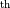
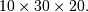
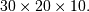
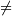
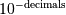

Array API¶
Array structure and data access¶
These macros all access the PyArrayObject structure members. The input argument, arr, can be any PyObject * that is directly interpretable as a PyArrayObject * (any instance of the PyArray_Type and its sub-types).
- int PyArray_NDIM(PyArrayObject *arr)¶
The number of dimensions in the array.
- npy_intp *PyArray_DIMS(PyArrayObject *arr)¶
Returns a pointer to the dimensions/shape of the array. The number of elements matches the number of dimensions of the array.
- npy_intp *PyArray_SHAPE(PyArrayObject *arr)¶
New in version 1.7.
A synonym for PyArray_DIMS, named to be consistent with the ‘shape’ usage within Python.
- void *PyArray_DATA(PyArrayObject *arr)¶
- char *PyArray_BYTES(PyArrayObject *arr)¶
These two macros are similar and obtain the pointer to the data-buffer for the array. The first macro can (and should be) assigned to a particular pointer where the second is for generic processing. If you have not guaranteed a contiguous and/or aligned array then be sure you understand how to access the data in the array to avoid memory and/or alignment problems.
- npy_intp *PyArray_STRIDES(PyArrayObject* arr)¶
Returns a pointer to the strides of the array. The number of elements matches the number of dimensions of the array.
- npy_intp PyArray_DIM(PyArrayObject* arr, int n)¶
Return the shape in the n  dimension.
- npy_intp PyArray_STRIDE(PyArrayObject* arr, int n)¶
Return the stride in the n dimension.
- PyObject *PyArray_BASE(PyArrayObject* arr)¶
This returns the base object of the array. In most cases, this means the object which owns the memory the array is pointing at.
If you are constructing an array using the C API, and specifying your own memory, you should use the function PyArray_SetBaseObject to set the base to an object which owns the memory.
If the NPY_ARRAY_UPDATEIFCOPY flag is set, it has a different meaning, namely base is the array into which the current array will be copied upon destruction. This overloading of the base property for two functions is likely to change in a future version of NumPy.
- PyArray_Descr *PyArray_DESCR(PyArrayObject* arr)¶
Returns a borrowed reference to the dtype property of the array.
- PyArray_Descr *PyArray_DTYPE(PyArrayObject* arr)¶
New in version 1.7.
A synonym for PyArray_DESCR, named to be consistent with the ‘dtype’ usage within Python.
- void PyArray_ENABLEFLAGS(PyArrayObject* arr, int flags)¶
New in version 1.7.
Enables the specified array flags. This function does no validation, and assumes that you know what you’re doing.
- void PyArray_CLEARFLAGS(PyArrayObject* arr, int flags)¶
New in version 1.7.
Clears the specified array flags. This function does no validation, and assumes that you know what you’re doing.
- int PyArray_FLAGS(PyArrayObject* arr)¶
- int PyArray_ITEMSIZE(PyArrayObject* arr)¶
Return the itemsize for the elements of this array.
- int PyArray_TYPE(PyArrayObject* arr)¶
Return the (builtin) typenumber for the elements of this array.
- PyObject *PyArray_GETITEM(PyArrayObject* arr, void* itemptr)¶
Get a Python object from the ndarray, arr, at the location pointed to by itemptr. Return NULL on failure.
- int PyArray_SETITEM(PyArrayObject* arr, void* itemptr, PyObject* obj)¶
Convert obj and place it in the ndarray, arr, at the place pointed to by itemptr. Return -1 if an error occurs or 0 on success.
- npy_intp PyArray_SIZE(PyArrayObject* arr)¶
Returns the total size (in number of elements) of the array.
- npy_intp PyArray_Size(PyArrayObject* obj)¶
Returns 0 if obj is not a sub-class of bigndarray. Otherwise, returns the total number of elements in the array. Safer version of PyArray_SIZE (obj).
- npy_intp PyArray_NBYTES(PyArrayObject* arr)¶
Returns the total number of bytes consumed by the array.
Data access¶
These functions and macros provide easy access to elements of the ndarray from C. These work for all arrays. You may need to take care when accessing the data in the array, however, if it is not in machine byte-order, misaligned, or not writeable. In other words, be sure to respect the state of the flags unless you know what you are doing, or have previously guaranteed an array that is writeable, aligned, and in machine byte-order using PyArray_FromAny. If you wish to handle all types of arrays, the copyswap function for each type is useful for handling misbehaved arrays. Some platforms (e.g. Solaris) do not like misaligned data and will crash if you de-reference a misaligned pointer. Other platforms (e.g. x86 Linux) will just work more slowly with misaligned data.
- void* PyArray_GetPtr(PyArrayObject* aobj, npy_intp* ind)¶
Return a pointer to the data of the ndarray, aobj, at the N-dimensional index given by the c-array, ind, (which must be at least aobj ->nd in size). You may want to typecast the returned pointer to the data type of the ndarray.
- void* PyArray_GETPTR1(PyArrayObject* obj, npy_intp i)¶
- void* PyArray_GETPTR2(PyArrayObject* obj, npy_intp i, npy_intp j)¶
- void* PyArray_GETPTR3(PyArrayObject* obj, npy_intp i, npy_intp j, npy_intp k)¶
- void* PyArray_GETPTR4(PyArrayObject* obj, npy_intp i, npy_intp j, npy_intp k, npy_intp l)¶
Quick, inline access to the element at the given coordinates in the ndarray, obj, which must have respectively 1, 2, 3, or 4 dimensions (this is not checked). The corresponding i, j, k, and l coordinates can be any integer but will be interpreted as npy_intp. You may want to typecast the returned pointer to the data type of the ndarray.
Creating arrays¶
From scratch¶
- PyObject* PyArray_NewFromDescr(PyTypeObject* subtype, PyArray_Descr* descr, int nd, npy_intp* dims, npy_intp* strides, void* data, int flags, PyObject* obj)¶
This function steals a reference to descr if it is not NULL.
This is the main array creation function. Most new arrays are created with this flexible function.
The returned object is an object of Python-type subtype, which must be a subtype of PyArray_Type. The array has nd dimensions, described by dims. The data-type descriptor of the new array is descr.
If subtype is of an array subclass instead of the base &PyArray_Type, then obj is the object to pass to the __array_finalize__ method of the subclass.
If data is NULL, then new memory will be allocated and flags can be non-zero to indicate a Fortran-style contiguous array. If data is not NULL, then it is assumed to point to the memory to be used for the array and the flags argument is used as the new flags for the array (except the state of NPY_OWNDATA and NPY_ARRAY_UPDATEIFCOPY flags of the new array will be reset).
In addition, if data is non-NULL, then strides can also be provided. If strides is NULL, then the array strides are computed as C-style contiguous (default) or Fortran-style contiguous (flags is nonzero for data = NULL or flags & NPY_ARRAY_F_CONTIGUOUS is nonzero non-NULL data). Any provided dims and strides are copied into newly allocated dimension and strides arrays for the new array object.
- PyObject* PyArray_NewLikeArray(PyArrayObject* prototype, NPY_ORDER order, PyArray_Descr* descr, int subok)¶
New in version 1.6.
This function steals a reference to descr if it is not NULL.
This array creation routine allows for the convenient creation of a new array matching an existing array’s shapes and memory layout, possibly changing the layout and/or data type.
When order is NPY_ANYORDER, the result order is NPY_FORTRANORDER if prototype is a fortran array, NPY_CORDER otherwise. When order is NPY_KEEPORDER, the result order matches that of prototype, even when the axes of prototype aren’t in C or Fortran order.
If descr is NULL, the data type of prototype is used.
If subok is 1, the newly created array will use the sub-type of prototype to create the new array, otherwise it will create a base-class array.
- PyObject* PyArray_New(PyTypeObject* subtype, int nd, npy_intp* dims, int type_num, npy_intp* strides, void* data, int itemsize, int flags, PyObject* obj)¶
This is similar to PyArray_DescrNew (...) except you specify the data-type descriptor with type_num and itemsize, where type_num corresponds to a builtin (or user-defined) type. If the type always has the same number of bytes, then itemsize is ignored. Otherwise, itemsize specifies the particular size of this array.
Warning
If data is passed to PyArray_NewFromDescr or PyArray_New, this memory must not be deallocated until the new array is deleted. If this data came from another Python object, this can be accomplished using Py_INCREF on that object and setting the base member of the new array to point to that object. If strides are passed in they must be consistent with the dimensions, the itemsize, and the data of the array.
- PyObject* PyArray_SimpleNew(int nd, npy_intp* dims, int typenum)¶
Create a new unitialized array of type, typenum, whose size in each of nd dimensions is given by the integer array, dims. This function cannot be used to create a flexible-type array (no itemsize given).
- PyObject* PyArray_SimpleNewFromData(int nd, npy_intp* dims, int typenum, void* data)¶
Create an array wrapper around data pointed to by the given pointer. The array flags will have a default that the data area is well-behaved and C-style contiguous. The shape of the array is given by the dims c-array of length nd. The data-type of the array is indicated by typenum.
- PyObject* PyArray_SimpleNewFromDescr(int nd, npy_intp* dims, PyArray_Descr* descr)¶
This function steals a reference to descr if it is not NULL.
Create a new array with the provided data-type descriptor, descr , of the shape deteremined by nd and dims.
- PyArray_FILLWBYTE(PyObject* obj, int val)¶
Fill the array pointed to by obj —which must be a (subclass of) bigndarray—with the contents of val (evaluated as a byte). This macro calls memset, so obj must be contiguous.
- PyObject* PyArray_Zeros(int nd, npy_intp* dims, PyArray_Descr* dtype, int fortran)¶
Construct a new nd -dimensional array with shape given by dims and data type given by dtype. If fortran is non-zero, then a Fortran-order array is created, otherwise a C-order array is created. Fill the memory with zeros (or the 0 object if dtype corresponds to NPY_OBJECT ).
- PyObject* PyArray_ZEROS(int nd, npy_intp* dims, int type_num, int fortran)¶
Macro form of PyArray_Zeros which takes a type-number instead of a data-type object.
- PyObject* PyArray_Empty(int nd, npy_intp* dims, PyArray_Descr* dtype, int fortran)¶
Construct a new nd -dimensional array with shape given by dims and data type given by dtype. If fortran is non-zero, then a Fortran-order array is created, otherwise a C-order array is created. The array is uninitialized unless the data type corresponds to NPY_OBJECT in which case the array is filled with Py_None.
- PyObject* PyArray_EMPTY(int nd, npy_intp* dims, int typenum, int fortran)¶
Macro form of PyArray_Empty which takes a type-number, typenum, instead of a data-type object.
- PyObject* PyArray_Arange(double start, double stop, double step, int typenum)¶
Construct a new 1-dimensional array of data-type, typenum, that ranges from start to stop (exclusive) in increments of step . Equivalent to arange (start, stop, step, dtype).
- PyObject* PyArray_ArangeObj(PyObject* start, PyObject* stop, PyObject* step, PyArray_Descr* descr)¶
Construct a new 1-dimensional array of data-type determined by descr, that ranges from start to stop (exclusive) in increments of step. Equivalent to arange( start, stop, step, typenum ).
- int PyArray_SetBaseObject(PyArrayObject* arr, PyObject* obj)¶
New in version 1.7.
This function steals a reference to obj and sets it as the base property of arr.
If you construct an array by passing in your own memory buffer as a parameter, you need to set the array’s base property to ensure the lifetime of the memory buffer is appropriate.
The return value is 0 on success, -1 on failure.
If the object provided is an array, this function traverses the chain of base pointers so that each array points to the owner of the memory directly. Once the base is set, it may not be changed to another value.
From other objects¶
- PyObject* PyArray_FromAny(PyObject* op, PyArray_Descr* dtype, int min_depth, int max_depth, int requirements, PyObject* context)¶
This is the main function used to obtain an array from any nested sequence, or object that exposes the array interface, op. The parameters allow specification of the required dtype, the minimum (min_depth) and maximum (max_depth) number of dimensions acceptable, and other requirements for the array. The dtype argument needs to be a PyArray_Descr structure indicating the desired data-type (including required byteorder). The dtype argument may be NULL, indicating that any data-type (and byteorder) is acceptable. Unless FORCECAST is present in flags, this call will generate an error if the data type cannot be safely obtained from the object. If you want to use NULL for the dtype and ensure the array is notswapped then use PyArray_CheckFromAny. A value of 0 for either of the depth parameters causes the parameter to be ignored. Any of the following array flags can be added (e.g. using |) to get the requirements argument. If your code can handle general (e.g. strided, byte-swapped, or unaligned arrays) then requirements may be 0. Also, if op is not already an array (or does not expose the array interface), then a new array will be created (and filled from op using the sequence protocol). The new array will have NPY_DEFAULT as its flags member. The context argument is passed to the __array__ method of op and is only used if the array is constructed that way. Almost always this parameter is NULL.
In versions 1.6 and earlier of NumPy, the following flags did not have the _ARRAY_ macro namespace in them. That form of the constant names is deprecated in 1.7.
- NPY_ARRAY_C_CONTIGUOUS¶
Make sure the returned array is C-style contiguous
- NPY_ARRAY_F_CONTIGUOUS¶
Make sure the returned array is Fortran-style contiguous.
- NPY_ARRAY_ALIGNED¶
Make sure the returned array is aligned on proper boundaries for its data type. An aligned array has the data pointer and every strides factor as a multiple of the alignment factor for the data-type- descriptor.
- NPY_ARRAY_WRITEABLE¶
Make sure the returned array can be written to.
- NPY_ARRAY_ENSURECOPY¶
Make sure a copy is made of op. If this flag is not present, data is not copied if it can be avoided.
- NPY_ARRAY_ENSUREARRAY¶
Make sure the result is a base-class ndarray or bigndarray. By default, if op is an instance of a subclass of the bigndarray, an instance of that same subclass is returned. If this flag is set, an ndarray object will be returned instead.
- NPY_ARRAY_FORCECAST¶
Force a cast to the output type even if it cannot be done safely. Without this flag, a data cast will occur only if it can be done safely, otherwise an error is reaised.
- NPY_ARRAY_UPDATEIFCOPY¶
If op is already an array, but does not satisfy the requirements, then a copy is made (which will satisfy the requirements). If this flag is present and a copy (of an object that is already an array) must be made, then the corresponding NPY_ARRAY_UPDATEIFCOPY flag is set in the returned copy and op is made to be read-only. When the returned copy is deleted (presumably after your calculations are complete), its contents will be copied back into op and the op array will be made writeable again. If op is not writeable to begin with, then an error is raised. If op is not already an array, then this flag has no effect.
- NPY_ARRAY_BEHAVED¶
- NPY_ARRAY_CARRAY¶
- NPY_ARRAY_CARRAY_RO¶
- NPY_ARRAY_FARRAY¶
- NPY_ARRAY_FARRAY_RO¶
- NPY_ARRAY_DEFAULT¶
- NPY_ARRAY_IN_ARRAY¶
NPY_ARRAY_CONTIGUOUS | NPY_ARRAY_ALIGNED
- NPY_ARRAY_IN_FARRAY¶
- NPY_OUT_ARRAY¶
NPY_ARRAY_C_CONTIGUOUS | NPY_ARRAY_WRITEABLE | NPY_ARRAY_ALIGNED
- NPY_ARRAY_OUT_FARRAY¶
NPY_ARRAY_F_CONTIGUOUS | NPY_ARRAY_WRITEABLE | NPY_ARRAY_ALIGNED
- NPY_ARRAY_INOUT_ARRAY¶
NPY_ARRAY_C_CONTIGUOUS | NPY_ARRAY_WRITEABLE | NPY_ARRAY_ALIGNED | NPY_ARRAY_UPDATEIFCOPY
- NPY_ARRAY_INOUT_FARRAY¶
NPY_ARRAY_F_CONTIGUOUS | NPY_ARRAY_WRITEABLE | NPY_ARRAY_ALIGNED | NPY_ARRAY_UPDATEIFCOPY
- int PyArray_GetArrayParamsFromObject(PyObject* op, PyArray_Descr* requested_dtype, npy_bool writeable, PyArray_Descr** out_dtype, int* out_ndim, npy_intp* out_dims, PyArrayObject** out_arr, PyObject* context)¶
New in version 1.6.
Retrieves the array parameters for viewing/converting an arbitrary PyObject* to a NumPy array. This allows the “innate type and shape” of Python list-of-lists to be discovered without actually converting to an array. PyArray_FromAny calls this function to analyze its input.
In some cases, such as structured arrays and the __array__ interface, a data type needs to be used to make sense of the object. When this is needed, provide a Descr for ‘requested_dtype’, otherwise provide NULL. This reference is not stolen. Also, if the requested dtype doesn’t modify the interpretation of the input, out_dtype will still get the “innate” dtype of the object, not the dtype passed in ‘requested_dtype’.
If writing to the value in ‘op’ is desired, set the boolean ‘writeable’ to 1. This raises an error when ‘op’ is a scalar, list of lists, or other non-writeable ‘op’. This differs from passing NPY_ARRAY_WRITEABLE to PyArray_FromAny, where the writeable array may be a copy of the input.
When success (0 return value) is returned, either out_arr is filled with a non-NULL PyArrayObject and the rest of the parameters are untouched, or out_arr is filled with NULL, and the rest of the parameters are filled.
Typical usage:
PyArrayObject *arr = NULL; PyArray_Descr *dtype = NULL; int ndim = 0; npy_intp dims[NPY_MAXDIMS]; if (PyArray_GetArrayParamsFromObject(op, NULL, 1, &dtype, &ndim, &dims, &arr, NULL) < 0) { return NULL; } if (arr == NULL) { ... validate/change dtype, validate flags, ndim, etc ... // Could make custom strides here too arr = PyArray_NewFromDescr(&PyArray_Type, dtype, ndim, dims, NULL, fortran ? NPY_ARRAY_F_CONTIGUOUS : 0, NULL); if (arr == NULL) { return NULL; } if (PyArray_CopyObject(arr, op) < 0) { Py_DECREF(arr); return NULL; } } else { ... in this case the other parameters weren't filled, just validate and possibly copy arr itself ... } ... use arr ...
- PyObject* PyArray_CheckFromAny(PyObject* op, PyArray_Descr* dtype, int min_depth, int max_depth, int requirements, PyObject* context)¶
Nearly identical to PyArray_FromAny (...) except requirements can contain NPY_ARRAY_NOTSWAPPED (over-riding the specification in dtype) and NPY_ARRAY_ELEMENTSTRIDES which indicates that the array should be aligned in the sense that the strides are multiples of the element size.
In versions 1.6 and earlier of NumPy, the following flags did not have the _ARRAY_ macro namespace in them. That form of the constant names is deprecated in 1.7.
- NPY_ARRAY_NOTSWAPPED¶
Make sure the returned array has a data-type descriptor that is in machine byte-order, over-riding any specification in the dtype argument. Normally, the byte-order requirement is determined by the dtype argument. If this flag is set and the dtype argument does not indicate a machine byte-order descriptor (or is NULL and the object is already an array with a data-type descriptor that is not in machine byte- order), then a new data-type descriptor is created and used with its byte-order field set to native.
- NPY_ARRAY_BEHAVED_NS¶
NPY_ARRAY_ALIGNED | NPY_ARRAY_WRITEABLE | NPY_ARRAY_NOTSWAPPED
- NPY_ARRAY_ELEMENTSTRIDES¶
Make sure the returned array has strides that are multiples of the element size.
- PyObject* PyArray_FromArray(PyArrayObject* op, PyArray_Descr* newtype, int requirements)¶
Special case of PyArray_FromAny for when op is already an array but it needs to be of a specific newtype (including byte-order) or has certain requirements.
- PyObject* PyArray_FromStructInterface(PyObject* op)¶
Returns an ndarray object from a Python object that exposes the __array_struct__` method and follows the array interface protocol. If the object does not contain this method then a borrowed reference to Py_NotImplemented is returned.
- PyObject* PyArray_FromInterface(PyObject* op)¶
Returns an ndarray object from a Python object that exposes the __array_shape__ and __array_typestr__ methods following the array interface protocol. If the object does not contain one of these method then a borrowed reference to Py_NotImplemented is returned.
- PyObject* PyArray_FromArrayAttr(PyObject* op, PyArray_Descr* dtype, PyObject* context)¶
Return an ndarray object from a Python object that exposes the __array__ method. The __array__ method can take 0, 1, or 2 arguments ([dtype, context]) where context is used to pass information about where the __array__ method is being called from (currently only used in ufuncs).
- PyObject* PyArray_ContiguousFromAny(PyObject* op, int typenum, int min_depth, int max_depth)¶
This function returns a (C-style) contiguous and behaved function array from any nested sequence or array interface exporting object, op, of (non-flexible) type given by the enumerated typenum, of minimum depth min_depth, and of maximum depth max_depth. Equivalent to a call to PyArray_FromAny with requirements set to NPY_DEFAULT and the type_num member of the type argument set to typenum.
- PyObject *PyArray_FromObject(PyObject *op, int typenum, int min_depth, int max_depth)¶
Return an aligned and in native-byteorder array from any nested sequence or array-interface exporting object, op, of a type given by the enumerated typenum. The minimum number of dimensions the array can have is given by min_depth while the maximum is max_depth. This is equivalent to a call to PyArray_FromAny with requirements set to BEHAVED.
- PyObject* PyArray_EnsureArray(PyObject* op)¶
This function steals a reference to op and makes sure that op is a base-class ndarray. It special cases array scalars, but otherwise calls PyArray_FromAny ( op, NULL, 0, 0, NPY_ARRAY_ENSUREARRAY).
- PyObject* PyArray_FromString(char* string, npy_intp slen, PyArray_Descr* dtype, npy_intp num, char* sep)¶
Construct a one-dimensional ndarray of a single type from a binary or (ASCII) text string of length slen. The data-type of the array to-be-created is given by dtype. If num is -1, then copy the entire string and return an appropriately sized array, otherwise, num is the number of items to copy from the string. If sep is NULL (or “”), then interpret the string as bytes of binary data, otherwise convert the sub-strings separated by sep to items of data-type dtype. Some data-types may not be readable in text mode and an error will be raised if that occurs. All errors return NULL.
- PyObject* PyArray_FromFile(FILE* fp, PyArray_Descr* dtype, npy_intp num, char* sep)¶
Construct a one-dimensional ndarray of a single type from a binary or text file. The open file pointer is fp, the data-type of the array to be created is given by dtype. This must match the data in the file. If num is -1, then read until the end of the file and return an appropriately sized array, otherwise, num is the number of items to read. If sep is NULL (or “”), then read from the file in binary mode, otherwise read from the file in text mode with sep providing the item separator. Some array types cannot be read in text mode in which case an error is raised.
- PyObject* PyArray_FromBuffer(PyObject* buf, PyArray_Descr* dtype, npy_intp count, npy_intp offset)¶
Construct a one-dimensional ndarray of a single type from an object, buf, that exports the (single-segment) buffer protocol (or has an attribute __buffer__ that returns an object that exports the buffer protocol). A writeable buffer will be tried first followed by a read- only buffer. The NPY_ARRAY_WRITEABLE flag of the returned array will reflect which one was successful. The data is assumed to start at offset bytes from the start of the memory location for the object. The type of the data in the buffer will be interpreted depending on the data- type descriptor, dtype. If count is negative then it will be determined from the size of the buffer and the requested itemsize, otherwise, count represents how many elements should be converted from the buffer.
- int PyArray_CopyInto(PyArrayObject* dest, PyArrayObject* src)¶
Copy from the source array, src, into the destination array, dest, performing a data-type conversion if necessary. If an error occurs return -1 (otherwise 0). The shape of src must be broadcastable to the shape of dest. The data areas of dest and src must not overlap.
- int PyArray_MoveInto(PyArrayObject* dest, PyArrayObject* src)¶
Move data from the source array, src, into the destination array, dest, performing a data-type conversion if necessary. If an error occurs return -1 (otherwise 0). The shape of src must be broadcastable to the shape of dest. The data areas of dest and src may overlap.
- PyArrayObject* PyArray_GETCONTIGUOUS(PyObject* op)¶
If op is already (C-style) contiguous and well-behaved then just return a reference, otherwise return a (contiguous and well-behaved) copy of the array. The parameter op must be a (sub-class of an) ndarray and no checking for that is done.
- PyObject* PyArray_FROM_O(PyObject* obj)¶
Convert obj to an ndarray. The argument can be any nested sequence or object that exports the array interface. This is a macro form of PyArray_FromAny using NULL, 0, 0, 0 for the other arguments. Your code must be able to handle any data-type descriptor and any combination of data-flags to use this macro.
- PyObject* PyArray_FROM_OF(PyObject* obj, int requirements)¶
Similar to PyArray_FROM_O except it can take an argument of requirements indicating properties the resulting array must have. Available requirements that can be enforced are NPY_ARRAY_C_CONTIGUOUS, NPY_ARRAY_F_CONTIGUOUS, NPY_ARRAY_ALIGNED, NPY_ARRAY_WRITEABLE, NPY_ARRAY_NOTSWAPPED, NPY_ARRAY_ENSURECOPY, NPY_ARRAY_UPDATEIFCOPY, NPY_ARRAY_FORCECAST, and NPY_ARRAY_ENSUREARRAY. Standard combinations of flags can also be used:
- PyObject* PyArray_FROM_OT(PyObject* obj, int typenum)¶
Similar to PyArray_FROM_O except it can take an argument of typenum specifying the type-number the returned array.
- PyObject* PyArray_FROM_OTF(PyObject* obj, int typenum, int requirements)¶
Combination of PyArray_FROM_OF and PyArray_FROM_OT allowing both a typenum and a flags argument to be provided..
- PyObject* PyArray_FROMANY(PyObject* obj, int typenum, int min, int max, int requirements)¶
Similar to PyArray_FromAny except the data-type is specified using a typenumber. PyArray_DescrFromType (typenum) is passed directly to PyArray_FromAny. This macro also adds NPY_DEFAULT to requirements if NPY_ARRAY_ENSURECOPY is passed in as requirements.
- PyObject *PyArray_CheckAxis(PyObject* obj, int* axis, int requirements)¶
Encapsulate the functionality of functions and methods that take the axis= keyword and work properly with None as the axis argument. The input array is obj, while *axis is a converted integer (so that >=MAXDIMS is the None value), and requirements gives the needed properties of obj. The output is a converted version of the input so that requirements are met and if needed a flattening has occurred. On output negative values of *axis are converted and the new value is checked to ensure consistency with the shape of obj.
Dealing with types¶
General check of Python Type¶
- PyArray_Check(op)¶
Evaluates true if op is a Python object whose type is a sub-type of PyArray_Type.
- PyArray_CheckExact(op)¶
Evaluates true if op is a Python object with type PyArray_Type.
- PyArray_HasArrayInterface(op, out)¶
If op implements any part of the array interface, then out will contain a new reference to the newly created ndarray using the interface or out will contain NULL if an error during conversion occurs. Otherwise, out will contain a borrowed reference to Py_NotImplemented and no error condition is set.
- PyArray_HasArrayInterfaceType(op, type, context, out)¶
If op implements any part of the array interface, then out will contain a new reference to the newly created ndarray using the interface or out will contain NULL if an error during conversion occurs. Otherwise, out will contain a borrowed reference to Py_NotImplemented and no error condition is set. This version allows setting of the type and context in the part of the array interface that looks for the __array__ attribute.
- PyArray_IsZeroDim(op)¶
Evaluates true if op is an instance of (a subclass of) PyArray_Type and has 0 dimensions.
- PyArray_IsScalar(op, cls)¶
Evaluates true if op is an instance of Py{cls}ArrType_Type.
- PyArray_CheckScalar(op)¶
Evaluates true if op is either an array scalar (an instance of a sub-type of PyGenericArr_Type ), or an instance of (a sub-class of) PyArray_Type whose dimensionality is 0.
- PyArray_IsPythonScalar(op)¶
Evaluates true if op is a builtin Python “scalar” object (int, float, complex, str, unicode, long, bool).
- PyArray_IsAnyScalar(op)¶
Evaluates true if op is either a Python scalar or an array scalar (an instance of a sub- type of PyGenericArr_Type ).
Data-type checking¶
For the typenum macros, the argument is an integer representing an enumerated array data type. For the array type checking macros the argument must be a PyObject * that can be directly interpreted as a PyArrayObject *.
- PyTypeNum_ISUNSIGNED(num)¶
- PyDataType_ISUNSIGNED(descr)¶
- PyArray_ISUNSIGNED(obj)¶
Type represents an unsigned integer.
- PyTypeNum_ISSIGNED(num)¶
- PyDataType_ISSIGNED(descr)¶
- PyArray_ISSIGNED(obj)¶
Type represents a signed integer.
- PyTypeNum_ISINTEGER(num)¶
- PyDataType_ISINTEGER(descr)¶
- PyArray_ISINTEGER(obj)¶
Type represents any integer.
- PyTypeNum_ISFLOAT(num)¶
- PyDataType_ISFLOAT(descr)¶
- PyArray_ISFLOAT(obj)¶
Type represents any floating point number.
- PyTypeNum_ISCOMPLEX(num)¶
- PyDataType_ISCOMPLEX(descr)¶
- PyArray_ISCOMPLEX(obj)¶
Type represents any complex floating point number.
- PyTypeNum_ISNUMBER(num)¶
- PyDataType_ISNUMBER(descr)¶
- PyArray_ISNUMBER(obj)¶
Type represents any integer, floating point, or complex floating point number.
- PyTypeNum_ISSTRING(num)¶
- PyDataType_ISSTRING(descr)¶
- PyArray_ISSTRING(obj)¶
Type represents a string data type.
- PyTypeNum_ISPYTHON(num)¶
- PyDataType_ISPYTHON(descr)¶
- PyArray_ISPYTHON(obj)¶
Type represents an enumerated type corresponding to one of the standard Python scalar (bool, int, float, or complex).
- PyTypeNum_ISFLEXIBLE(num)¶
- PyDataType_ISFLEXIBLE(descr)¶
- PyArray_ISFLEXIBLE(obj)¶
Type represents one of the flexible array types ( NPY_STRING, NPY_UNICODE, or NPY_VOID ).
- PyTypeNum_ISUSERDEF(num)¶
- PyDataType_ISUSERDEF(descr)¶
- PyArray_ISUSERDEF(obj)¶
Type represents a user-defined type.
- PyTypeNum_ISEXTENDED(num)¶
- PyDataType_ISEXTENDED(descr)¶
- PyArray_ISEXTENDED(obj)¶
Type is either flexible or user-defined.
- PyTypeNum_ISOBJECT(num)¶
- PyDataType_ISOBJECT(descr)¶
- PyArray_ISOBJECT(obj)¶
Type represents object data type.
- PyTypeNum_ISBOOL(num)¶
- PyDataType_ISBOOL(descr)¶
- PyArray_ISBOOL(obj)¶
Type represents Boolean data type.
- PyDataType_HASFIELDS(descr)¶
- PyArray_HASFIELDS(obj)¶
Type has fields associated with it.
- PyArray_ISNOTSWAPPED(m)¶
Evaluates true if the data area of the ndarray m is in machine byte-order according to the array’s data-type descriptor.
- PyArray_ISBYTESWAPPED(m)¶
Evaluates true if the data area of the ndarray m is not in machine byte-order according to the array’s data-type descriptor.
- Bool PyArray_EquivTypes(PyArray_Descr* type1, PyArray_Descr* type2)¶
Return NPY_TRUE if type1 and type2 actually represent equivalent types for this platform (the fortran member of each type is ignored). For example, on 32-bit platforms, NPY_LONG and NPY_INT are equivalent. Otherwise return NPY_FALSE.
- Bool PyArray_EquivArrTypes(PyArrayObject* a1, PyArrayObject * a2)¶
Return NPY_TRUE if a1 and a2 are arrays with equivalent types for this platform.
- Bool PyArray_EquivTypenums(int typenum1, int typenum2)¶
Special case of PyArray_EquivTypes (...) that does not accept flexible data types but may be easier to call.
- int PyArray_EquivByteorders({byteorder} b1, {byteorder} b2)¶
True if byteorder characters ( NPY_LITTLE, NPY_BIG, NPY_NATIVE, NPY_IGNORE ) are either equal or equivalent as to their specification of a native byte order. Thus, on a little-endian machine NPY_LITTLE and NPY_NATIVE are equivalent where they are not equivalent on a big-endian machine.
Converting data types¶
- PyObject* PyArray_Cast(PyArrayObject* arr, int typenum)¶
Mainly for backwards compatibility to the Numeric C-API and for simple casts to non-flexible types. Return a new array object with the elements of arr cast to the data-type typenum which must be one of the enumerated types and not a flexible type.
- PyObject* PyArray_CastToType(PyArrayObject* arr, PyArray_Descr* type, int fortran)¶
Return a new array of the type specified, casting the elements of arr as appropriate. The fortran argument specifies the ordering of the output array.
- int PyArray_CastTo(PyArrayObject* out, PyArrayObject* in)¶
As of 1.6, this function simply calls PyArray_CopyInto, which handles the casting.
Cast the elements of the array in into the array out. The output array should be writeable, have an integer-multiple of the number of elements in the input array (more than one copy can be placed in out), and have a data type that is one of the builtin types. Returns 0 on success and -1 if an error occurs.
- PyArray_VectorUnaryFunc* PyArray_GetCastFunc(PyArray_Descr* from, int totype)¶
Return the low-level casting function to cast from the given descriptor to the builtin type number. If no casting function exists return NULL and set an error. Using this function instead of direct access to from ->f->cast will allow support of any user-defined casting functions added to a descriptors casting dictionary.
- int PyArray_CanCastSafely(int fromtype, int totype)¶
Returns non-zero if an array of data type fromtype can be cast to an array of data type totype without losing information. An exception is that 64-bit integers are allowed to be cast to 64-bit floating point values even though this can lose precision on large integers so as not to proliferate the use of long doubles without explict requests. Flexible array types are not checked according to their lengths with this function.
- int PyArray_CanCastTo(PyArray_Descr* fromtype, PyArray_Descr* totype)¶
PyArray_CanCastTypeTo supercedes this function in NumPy 1.6 and later.
Equivalent to PyArray_CanCastTypeTo(fromtype, totype, NPY_SAFE_CASTING).
- int PyArray_CanCastTypeTo(PyArray_Descr* fromtype, PyArray_Descr* totype, NPY_CASTING casting)¶
New in version 1.6.
Returns non-zero if an array of data type fromtype (which can include flexible types) can be cast safely to an array of data type totype (which can include flexible types) according to the casting rule casting. For simple types with NPY_SAFE_CASTING, this is basically a wrapper around PyArray_CanCastSafely, but for flexible types such as strings or unicode, it produces results taking into account their sizes.
- int PyArray_CanCastArrayTo(PyArrayObject* arr, PyArray_Descr* totype, NPY_CASTING casting)¶
New in version 1.6.
Returns non-zero if arr can be cast to totype according to the casting rule given in casting. If arr is an array scalar, its value is taken into account, and non-zero is also returned when the value will not overflow or be truncated to an integer when converting to a smaller type.
This is almost the same as the result of PyArray_CanCastTypeTo(PyArray_MinScalarType(arr), totype, casting), but it also handles a special case arising because the set of uint values is not a subset of the int values for types with the same number of bits.
- PyArray_Descr* PyArray_MinScalarType(PyArrayObject* arr)¶
New in version 1.6.
If arr is an array, returns its data type descriptor, but if arr is an array scalar (has 0 dimensions), it finds the data type of smallest size to which the value may be converted without overflow or truncation to an integer.
This function will not demote complex to float or anything to boolean, but will demote a signed integer to an unsigned integer when the scalar value is positive.
- PyArray_Descr* PyArray_PromoteTypes(PyArray_Descr* type1, PyArray_Descr* type2)¶
New in version 1.6.
Finds the data type of smallest size and kind to which type1 and type2 may be safely converted. This function is symmetric and associative.
- PyArray_Descr* PyArray_ResultType(npy_intp narrs, PyArrayObject**arrs, npy_intp ndtypes, PyArray_Descr**dtypes)¶
New in version 1.6.
This applies type promotion to all the inputs, using the NumPy rules for combining scalars and arrays, to determine the output type of a set of operands. This is the same result type that ufuncs produce. The specific algorithm used is as follows.
Categories are determined by first checking which of boolean, integer (int/uint), or floating point (float/complex) the maximum kind of all the arrays and the scalars are.
If there are only scalars or the maximum category of the scalars is higher than the maximum category of the arrays, the data types are combined with PyArray_PromoteTypes to produce the return value.
Otherwise, PyArray_MinScalarType is called on each array, and the resulting data types are all combined with PyArray_PromoteTypes to produce the return value.
The set of int values is not a subset of the uint values for types with the same number of bits, something not reflected in PyArray_MinScalarType, but handled as a special case in PyArray_ResultType.
- int PyArray_ObjectType(PyObject* op, int mintype)¶
This function is superceded by PyArray_MinScalarType and/or PyArray_ResultType.
This function is useful for determining a common type that two or more arrays can be converted to. It only works for non-flexible array types as no itemsize information is passed. The mintype argument represents the minimum type acceptable, and op represents the object that will be converted to an array. The return value is the enumerated typenumber that represents the data-type that op should have.
- void PyArray_ArrayType(PyObject* op, PyArray_Descr* mintype, PyArray_Descr* outtype)¶
This function is superceded by PyArray_ResultType.
This function works similarly to PyArray_ObjectType (...) except it handles flexible arrays. The mintype argument can have an itemsize member and the outtype argument will have an itemsize member at least as big but perhaps bigger depending on the object op.
- PyArrayObject** PyArray_ConvertToCommonType(PyObject* op, int* n)¶
The functionality this provides is largely superceded by iterator NpyIter introduced in 1.6, with flag NPY_ITER_COMMON_DTYPE or with the same dtype parameter for all operands.
Convert a sequence of Python objects contained in op to an array of ndarrays each having the same data type. The type is selected based on the typenumber (larger type number is chosen over a smaller one) ignoring objects that are only scalars. The length of the sequence is returned in n, and an n -length array of PyArrayObject pointers is the return value (or NULL if an error occurs). The returned array must be freed by the caller of this routine (using PyDataMem_FREE ) and all the array objects in it DECREF ‘d or a memory-leak will occur. The example template-code below shows a typically usage:
mps = PyArray_ConvertToCommonType(obj, &n); if (mps==NULL) return NULL; {code} <before return> for (i=0; i<n; i++) Py_DECREF(mps[i]); PyDataMem_FREE(mps); {return}
- char* PyArray_Zero(PyArrayObject* arr)¶
A pointer to newly created memory of size arr ->itemsize that holds the representation of 0 for that type. The returned pointer, ret, must be freed using PyDataMem_FREE (ret) when it is not needed anymore.
- char* PyArray_One(PyArrayObject* arr)¶
A pointer to newly created memory of size arr ->itemsize that holds the representation of 1 for that type. The returned pointer, ret, must be freed using PyDataMem_FREE (ret) when it is not needed anymore.
New data types¶
- void PyArray_InitArrFuncs(PyArray_ArrFuncs* f)¶
Initialize all function pointers and members to NULL.
- int PyArray_RegisterDataType(PyArray_Descr* dtype)¶
Register a data-type as a new user-defined data type for arrays. The type must have most of its entries filled in. This is not always checked and errors can produce segfaults. In particular, the typeobj member of the dtype structure must be filled with a Python type that has a fixed-size element-size that corresponds to the elsize member of dtype. Also the f member must have the required functions: nonzero, copyswap, copyswapn, getitem, setitem, and cast (some of the cast functions may be NULL if no support is desired). To avoid confusion, you should choose a unique character typecode but this is not enforced and not relied on internally.
A user-defined type number is returned that uniquely identifies the type. A pointer to the new structure can then be obtained from PyArray_DescrFromType using the returned type number. A -1 is returned if an error occurs. If this dtype has already been registered (checked only by the address of the pointer), then return the previously-assigned type-number.
- int PyArray_RegisterCastFunc(PyArray_Descr* descr, int totype, PyArray_VectorUnaryFunc* castfunc)¶
Register a low-level casting function, castfunc, to convert from the data-type, descr, to the given data-type number, totype. Any old casting function is over-written. A 0 is returned on success or a -1 on failure.
- int PyArray_RegisterCanCast(PyArray_Descr* descr, int totype, NPY_SCALARKIND scalar)¶
Register the data-type number, totype, as castable from data-type object, descr, of the given scalar kind. Use scalar = NPY_NOSCALAR to register that an array of data-type descr can be cast safely to a data-type whose type_number is totype.
Special functions for NPY_OBJECT¶
- int PyArray_INCREF(PyArrayObject* op)¶
Used for an array, op, that contains any Python objects. It increments the reference count of every object in the array according to the data-type of op. A -1 is returned if an error occurs, otherwise 0 is returned.
- void PyArray_Item_INCREF(char* ptr, PyArray_Descr* dtype)¶
A function to INCREF all the objects at the location ptr according to the data-type dtype. If ptr is the start of a record with an object at any offset, then this will (recursively) increment the reference count of all object-like items in the record.
- int PyArray_XDECREF(PyArrayObject* op)¶
Used for an array, op, that contains any Python objects. It decrements the reference count of every object in the array according to the data-type of op. Normal return value is 0. A -1 is returned if an error occurs.
- void PyArray_Item_XDECREF(char* ptr, PyArray_Descr* dtype)¶
A function to XDECREF all the object-like items at the loacation ptr as recorded in the data-type, dtype. This works recursively so that if dtype itself has fields with data-types that contain object-like items, all the object-like fields will be XDECREF 'd.
- void PyArray_FillObjectArray(PyArrayObject* arr, PyObject* obj)¶
Fill a newly created array with a single value obj at all locations in the structure with object data-types. No checking is performed but arr must be of data-type NPY_OBJECT and be single-segment and uninitialized (no previous objects in position). Use PyArray_DECREF (arr) if you need to decrement all the items in the object array prior to calling this function.
Array flags¶
The flags attribute of the PyArrayObject structure contains important information about the memory used by the array (pointed to by the data member) This flag information must be kept accurate or strange results and even segfaults may result.
There are 6 (binary) flags that describe the memory area used by the data buffer. These constants are defined in arrayobject.h and determine the bit-position of the flag. Python exposes a nice attribute- based interface as well as a dictionary-like interface for getting (and, if appropriate, setting) these flags.
Memory areas of all kinds can be pointed to by an ndarray, necessitating these flags. If you get an arbitrary PyArrayObject in C-code, you need to be aware of the flags that are set. If you need to guarantee a certain kind of array (like NPY_ARRAY_C_CONTIGUOUS and NPY_ARRAY_BEHAVED), then pass these requirements into the PyArray_FromAny function.
Basic Array Flags¶
An ndarray can have a data segment that is not a simple contiguous chunk of well-behaved memory you can manipulate. It may not be aligned with word boundaries (very important on some platforms). It might have its data in a different byte-order than the machine recognizes. It might not be writeable. It might be in Fortan-contiguous order. The array flags are used to indicate what can be said about data associated with an array.
In versions 1.6 and earlier of NumPy, the following flags did not have the _ARRAY_ macro namespace in them. That form of the constant names is deprecated in 1.7.
- NPY_ARRAY_C_CONTIGUOUS
The data area is in C-style contiguous order (last index varies the fastest).
- NPY_ARRAY_F_CONTIGUOUS
The data area is in Fortran-style contiguous order (first index varies the fastest).
Note
Arrays can be both C-style and Fortran-style contiguous simultaneously. This is clear for 1-dimensional arrays, but can also be true for higher dimensional arrays.
Even for contiguous arrays a stride for a given dimension arr.strides[dim] may be arbitrary if arr.shape[dim] == 1 or the array has no elements. It does not generally hold that self.strides[-1] == self.itemsize for C-style contiguous arrays or self.strides[0] == self.itemsize for Fortran-style contiguous arrays is true. The correct way to access the itemsize of an array from the C API is PyArray_ITEMSIZE(arr).
See also
- NPY_ARRAY_OWNDATA¶
The data area is owned by this array.
- NPY_ARRAY_ALIGNED
The data area and all array elements are aligned appropriately.
- NPY_ARRAY_WRITEABLE
The data area can be written to.
Notice that the above 3 flags are are defined so that a new, well- behaved array has these flags defined as true.
- NPY_ARRAY_UPDATEIFCOPY
The data area represents a (well-behaved) copy whose information should be transferred back to the original when this array is deleted.
This is a special flag that is set if this array represents a copy made because a user required certain flags in PyArray_FromAny and a copy had to be made of some other array (and the user asked for this flag to be set in such a situation). The base attribute then points to the “misbehaved” array (which is set read_only). When the array with this flag set is deallocated, it will copy its contents back to the “misbehaved” array (casting if necessary) and will reset the “misbehaved” array to NPY_ARRAY_WRITEABLE. If the “misbehaved” array was not NPY_ARRAY_WRITEABLE to begin with then PyArray_FromAny would have returned an error because NPY_ARRAY_UPDATEIFCOPY would not have been possible.
PyArray_UpdateFlags (obj, flags) will update the obj->flags for flags which can be any of NPY_ARRAY_C_CONTIGUOUS, NPY_ARRAY_F_CONTIGUOUS, NPY_ARRAY_ALIGNED, or NPY_ARRAY_WRITEABLE.
Combinations of array flags¶
- NPY_ARRAY_BEHAVED
- NPY_ARRAY_CARRAY
- NPY_ARRAY_CARRAY_RO
- NPY_ARRAY_FARRAY
- NPY_ARRAY_FARRAY_RO
- NPY_ARRAY_DEFAULT
- NPY_ARRAY_UPDATE_ALL¶
NPY_ARRAY_C_CONTIGUOUS | NPY_ARRAY_F_CONTIGUOUS | NPY_ARRAY_ALIGNED
Flag-like constants¶
These constants are used in PyArray_FromAny (and its macro forms) to specify desired properties of the new array.
- NPY_ARRAY_FORCECAST
Cast to the desired type, even if it can’t be done without losing information.
- NPY_ARRAY_ENSURECOPY
Make sure the resulting array is a copy of the original.
- NPY_ARRAY_ENSUREARRAY
Make sure the resulting object is an actual ndarray (or bigndarray), and not a sub-class.
- NPY_ARRAY_NOTSWAPPED
Only used in PyArray_CheckFromAny to over-ride the byteorder of the data-type object passed in.
- NPY_ARRAY_BEHAVED_NS
NPY_ARRAY_ALIGNED | NPY_ARRAY_WRITEABLE | NPY_ARRAY_NOTSWAPPED
Flag checking¶
For all of these macros arr must be an instance of a (subclass of) PyArray_Type, but no checking is done.
- PyArray_CHKFLAGS(arr, flags)¶
The first parameter, arr, must be an ndarray or subclass. The parameter, flags, should be an integer consisting of bitwise combinations of the possible flags an array can have: NPY_ARRAY_C_CONTIGUOUS, NPY_ARRAY_F_CONTIGUOUS, NPY_ARRAY_OWNDATA, NPY_ARRAY_ALIGNED, NPY_ARRAY_WRITEABLE, NPY_ARRAY_UPDATEIFCOPY.
- PyArray_IS_C_CONTIGUOUS(arr)¶
Evaluates true if arr is C-style contiguous.
- PyArray_IS_F_CONTIGUOUS(arr)¶
Evaluates true if arr is Fortran-style contiguous.
- PyArray_ISFORTRAN(arr)¶
Evaluates true if arr is Fortran-style contiguous and not C-style contiguous. PyArray_IS_F_CONTIGUOUS is the correct way to test for Fortran-style contiguity.
- PyArray_ISWRITEABLE(arr)¶
Evaluates true if the data area of arr can be written to
- PyArray_ISALIGNED(arr)¶
Evaluates true if the data area of arr is properly aligned on the machine.
- PyArray_ISBEHAVED(arr)¶
Evalutes true if the data area of arr is aligned and writeable and in machine byte-order according to its descriptor.
- PyArray_ISBEHAVED_RO(arr)¶
Evaluates true if the data area of arr is aligned and in machine byte-order.
- PyArray_ISCARRAY(arr)¶
Evaluates true if the data area of arr is C-style contiguous, and PyArray_ISBEHAVED (arr) is true.
- PyArray_ISFARRAY(arr)¶
Evaluates true if the data area of arr is Fortran-style contiguous and PyArray_ISBEHAVED (arr) is true.
- PyArray_ISCARRAY_RO(arr)¶
Evaluates true if the data area of arr is C-style contiguous, aligned, and in machine byte-order.
- PyArray_ISFARRAY_RO(arr)¶
Evaluates true if the data area of arr is Fortran-style contiguous, aligned, and in machine byte-order .
- PyArray_ISONESEGMENT(arr)¶
Evaluates true if the data area of arr consists of a single (C-style or Fortran-style) contiguous segment.
- void PyArray_UpdateFlags(PyArrayObject* arr, int flagmask)¶
The NPY_ARRAY_C_CONTIGUOUS, NPY_ARRAY_ALIGNED, and NPY_ARRAY_F_CONTIGUOUS array flags can be “calculated” from the array object itself. This routine updates one or more of these flags of arr as specified in flagmask by performing the required calculation.
Warning
It is important to keep the flags updated (using PyArray_UpdateFlags can help) whenever a manipulation with an array is performed that might cause them to change. Later calculations in NumPy that rely on the state of these flags do not repeat the calculation to update them.
Array method alternative API¶
Conversion¶
- PyObject* PyArray_GetField(PyArrayObject* self, PyArray_Descr* dtype, int offset)¶
Equivalent to ndarray.getfield (self, dtype, offset). Return a new array of the given dtype using the data in the current array at a specified offset in bytes. The offset plus the itemsize of the new array type must be less than self ->descr->elsize or an error is raised. The same shape and strides as the original array are used. Therefore, this function has the effect of returning a field from a record array. But, it can also be used to select specific bytes or groups of bytes from any array type.
- int PyArray_SetField(PyArrayObject* self, PyArray_Descr* dtype, int offset, PyObject* val)¶
Equivalent to ndarray.setfield (self, val, dtype, offset ). Set the field starting at offset in bytes and of the given dtype to val. The offset plus dtype ->elsize must be less than self ->descr->elsize or an error is raised. Otherwise, the val argument is converted to an array and copied into the field pointed to. If necessary, the elements of val are repeated to fill the destination array, But, the number of elements in the destination must be an integer multiple of the number of elements in val.
- PyObject* PyArray_Byteswap(PyArrayObject* self, Bool inplace)¶
Equivalent to ndarray.byteswap (self, inplace). Return an array whose data area is byteswapped. If inplace is non-zero, then do the byteswap inplace and return a reference to self. Otherwise, create a byteswapped copy and leave self unchanged.
- PyObject* PyArray_NewCopy(PyArrayObject* old, NPY_ORDER order)¶
Equivalent to ndarray.copy (self, fortran). Make a copy of the old array. The returned array is always aligned and writeable with data interpreted the same as the old array. If order is NPY_CORDER, then a C-style contiguous array is returned. If order is NPY_FORTRANORDER, then a Fortran-style contiguous array is returned. If order is NPY_ANYORDER, then the array returned is Fortran-style contiguous only if the old one is; otherwise, it is C-style contiguous.
- PyObject* PyArray_ToList(PyArrayObject* self)¶
Equivalent to ndarray.tolist (self). Return a nested Python list from self.
- PyObject* PyArray_ToString(PyArrayObject* self, NPY_ORDER order)¶
Equivalent to ndarray.tostring (self, order). Return the bytes of this array in a Python string.
- PyObject* PyArray_ToFile(PyArrayObject* self, FILE* fp, char* sep, char* format)¶
Write the contents of self to the file pointer fp in C-style contiguous fashion. Write the data as binary bytes if sep is the string “”or NULL. Otherwise, write the contents of self as text using the sep string as the item separator. Each item will be printed to the file. If the format string is not NULL or “”, then it is a Python print statement format string showing how the items are to be written.
- int PyArray_Dump(PyObject* self, PyObject* file, int protocol)¶
Pickle the object in self to the given file (either a string or a Python file object). If file is a Python string it is considered to be the name of a file which is then opened in binary mode. The given protocol is used (if protocol is negative, or the highest available is used). This is a simple wrapper around cPickle.dump(self, file, protocol).
- PyObject* PyArray_Dumps(PyObject* self, int protocol)¶
Pickle the object in self to a Python string and return it. Use the Pickle protocol provided (or the highest available if protocol is negative).
- int PyArray_FillWithScalar(PyArrayObject* arr, PyObject* obj)¶
Fill the array, arr, with the given scalar object, obj. The object is first converted to the data type of arr, and then copied into every location. A -1 is returned if an error occurs, otherwise 0 is returned.
- PyObject* PyArray_View(PyArrayObject* self, PyArray_Descr* dtype, PyTypeObject *ptype)¶
Equivalent to ndarray.view (self, dtype). Return a new view of the array self as possibly a different data-type, dtype, and different array subclass ptype.
If dtype is NULL, then the returned array will have the same data type as self. The new data-type must be consistent with the size of self. Either the itemsizes must be identical, or self must be single-segment and the total number of bytes must be the same. In the latter case the dimensions of the returned array will be altered in the last (or first for Fortran-style contiguous arrays) dimension. The data area of the returned array and self is exactly the same.
Shape Manipulation¶
- PyObject* PyArray_Newshape(PyArrayObject* self, PyArray_Dims* newshape)¶
Result will be a new array (pointing to the same memory location as self if possible), but having a shape given by newshape . If the new shape is not compatible with the strides of self, then a copy of the array with the new specified shape will be returned.
- PyObject* PyArray_Reshape(PyArrayObject* self, PyObject* shape)¶
Equivalent to ndarray.reshape (self, shape) where shape is a sequence. Converts shape to a PyArray_Dims structure and calls PyArray_Newshape internally.
- PyObject* PyArray_Squeeze(PyArrayObject* self)¶
Equivalent to ndarray.squeeze (self). Return a new view of self with all of the dimensions of length 1 removed from the shape.
Warning
matrix objects are always 2-dimensional. Therefore, PyArray_Squeeze has no effect on arrays of matrix sub-class.
- PyObject* PyArray_SwapAxes(PyArrayObject* self, int a1, int a2)¶
Equivalent to ndarray.swapaxes (self, a1, a2). The returned array is a new view of the data in self with the given axes, a1 and a2, swapped.
- PyObject* PyArray_Resize(PyArrayObject* self, PyArray_Dims* newshape, int refcheck, NPY_ORDER fortran)¶
Equivalent to ndarray.resize (self, newshape, refcheck = refcheck, order= fortran ). This function only works on single-segment arrays. It changes the shape of self inplace and will reallocate the memory for self if newshape has a different total number of elements then the old shape. If reallocation is necessary, then self must own its data, have self - >base==NULL, have self - >weakrefs==NULL, and (unless refcheck is 0) not be referenced by any other array. A reference to the new array is returned. The fortran argument can be NPY_ANYORDER, NPY_CORDER, or NPY_FORTRANORDER. It currently has no effect. Eventually it could be used to determine how the resize operation should view the data when constructing a differently-dimensioned array.
- PyObject* PyArray_Transpose(PyArrayObject* self, PyArray_Dims* permute)¶
Equivalent to ndarray.transpose (self, permute). Permute the axes of the ndarray object self according to the data structure permute and return the result. If permute is NULL, then the resulting array has its axes reversed. For example if self has shape , and permute .ptr is (0,2,1) the shape of the result is  If permute is NULL, the shape of the result is 
- PyObject* PyArray_Flatten(PyArrayObject* self, NPY_ORDER order)¶
Equivalent to ndarray.flatten (self, order). Return a 1-d copy of the array. If order is NPY_FORTRANORDER the elements are scanned out in Fortran order (first-dimension varies the fastest). If order is NPY_CORDER, the elements of self are scanned in C-order (last dimension varies the fastest). If order NPY_ANYORDER, then the result of PyArray_ISFORTRAN (self) is used to determine which order to flatten.
- PyObject* PyArray_Ravel(PyArrayObject* self, NPY_ORDER order)¶
Equivalent to self.ravel(order). Same basic functionality as PyArray_Flatten (self, order) except if order is 0 and self is C-style contiguous, the shape is altered but no copy is performed.
Item selection and manipulation¶
- PyObject* PyArray_TakeFrom(PyArrayObject* self, PyObject* indices, int axis, PyArrayObject* ret, NPY_CLIPMODE clipmode)¶
Equivalent to ndarray.take (self, indices, axis, ret, clipmode) except axis =None in Python is obtained by setting axis = NPY_MAXDIMS in C. Extract the items from self indicated by the integer-valued indices along the given axis. The clipmode argument can be NPY_RAISE, NPY_WRAP, or NPY_CLIP to indicate what to do with out-of-bound indices. The ret argument can specify an output array rather than having one created internally.
- PyObject* PyArray_PutTo(PyArrayObject* self, PyObject* values, PyObject* indices, NPY_CLIPMODE clipmode)¶
Equivalent to self.put(values, indices, clipmode ). Put values into self at the corresponding (flattened) indices. If values is too small it will be repeated as necessary.
- PyObject* PyArray_PutMask(PyArrayObject* self, PyObject* values, PyObject* mask)¶
Place the values in self wherever corresponding positions (using a flattened context) in mask are true. The mask and self arrays must have the same total number of elements. If values is too small, it will be repeated as necessary.
- PyObject* PyArray_Repeat(PyArrayObject* self, PyObject* op, int axis)¶
Equivalent to ndarray.repeat (self, op, axis). Copy the elements of self, op times along the given axis. Either op is a scalar integer or a sequence of length self ->dimensions[ axis ] indicating how many times to repeat each item along the axis.
- PyObject* PyArray_Choose(PyArrayObject* self, PyObject* op, PyArrayObject* ret, NPY_CLIPMODE clipmode)¶
Equivalent to ndarray.choose (self, op, ret, clipmode). Create a new array by selecting elements from the sequence of arrays in op based on the integer values in self. The arrays must all be broadcastable to the same shape and the entries in self should be between 0 and len(op). The output is placed in ret unless it is NULL in which case a new output is created. The clipmode argument determines behavior for when entries in self are not between 0 and len(op).
- NPY_RAISE¶
raise a ValueError;
- NPY_WRAP¶
wrap values < 0 by adding len(op) and values >=len(op) by subtracting len(op) until they are in range;
- NPY_CLIP¶
all values are clipped to the region [0, len(op) ).
- PyObject* PyArray_Sort(PyArrayObject* self, int axis)¶
Equivalent to ndarray.sort (self, axis). Return an array with the items of self sorted along axis.
- PyObject* PyArray_ArgSort(PyArrayObject* self, int axis)¶
Equivalent to ndarray.argsort (self, axis). Return an array of indices such that selection of these indices along the given axis would return a sorted version of self. If self ->descr is a data-type with fields defined, then self->descr->names is used to determine the sort order. A comparison where the first field is equal will use the second field and so on. To alter the sort order of a record array, create a new data-type with a different order of names and construct a view of the array with that new data-type.
- PyObject* PyArray_LexSort(PyObject* sort_keys, int axis)¶
Given a sequence of arrays (sort_keys) of the same shape, return an array of indices (similar to PyArray_ArgSort (...)) that would sort the arrays lexicographically. A lexicographic sort specifies that when two keys are found to be equal, the order is based on comparison of subsequent keys. A merge sort (which leaves equal entries unmoved) is required to be defined for the types. The sort is accomplished by sorting the indices first using the first sort_key and then using the second sort_key and so forth. This is equivalent to the lexsort(sort_keys, axis) Python command. Because of the way the merge-sort works, be sure to understand the order the sort_keys must be in (reversed from the order you would use when comparing two elements).
If these arrays are all collected in a record array, then PyArray_Sort (...) can also be used to sort the array directly.
- PyObject* PyArray_SearchSorted(PyArrayObject* self, PyObject* values)¶
Equivalent to ndarray.searchsorted (self, values). Assuming self is a 1-d array in ascending order representing bin boundaries then the output is an array the same shape as values of bin numbers, giving the bin into which each item in values would be placed. No checking is done on whether or not self is in ascending order.
- int PyArray_Partition(PyArrayObject *self, PyArrayObject * ktharray, int axis, NPY_SELECTKIND which)¶
Equivalent to ndarray.partition (self, ktharray, axis, kind). Partitions the array so that the values of the element indexed by ktharray are in the positions they would be if the array is fully sorted and places all elements smaller than the kth before and all elements equal or greater after the kth element. The ordering of all elements within the partitions is undefined. If self->descr is a data-type with fields defined, then self->descr->names is used to determine the sort order. A comparison where the first field is equal will use the second field and so on. To alter the sort order of a record array, create a new data-type with a different order of names and construct a view of the array with that new data-type. Returns zero on success and -1 on failure.
- PyObject* PyArray_ArgPartition(PyArrayObject *op, PyArrayObject * ktharray, int axis, NPY_SELECTKIND which)¶
Equivalent to ndarray.argpartition (self, ktharray, axis, kind). Return an array of indices such that selection of these indices along the given axis would return a partitioned version of self.
- PyObject* PyArray_Diagonal(PyArrayObject* self, int offset, int axis1, int axis2)¶
Equivalent to ndarray.diagonal (self, offset, axis1, axis2 ). Return the offset diagonals of the 2-d arrays defined by axis1 and axis2.
- npy_intp PyArray_CountNonzero(PyArrayObject* self)¶
New in version 1.6.
Counts the number of non-zero elements in the array object self.
- PyObject* PyArray_Nonzero(PyArrayObject* self)¶
Equivalent to ndarray.nonzero (self). Returns a tuple of index arrays that select elements of self that are nonzero. If (nd= PyArray_NDIM ( self ))==1, then a single index array is returned. The index arrays have data type NPY_INTP. If a tuple is returned (nd  1), then its length is nd.
- PyObject* PyArray_Compress(PyArrayObject* self, PyObject* condition, int axis, PyArrayObject* out)¶
Equivalent to ndarray.compress (self, condition, axis ). Return the elements along axis corresponding to elements of condition that are true.
Calculation¶
Tip
Pass in NPY_MAXDIMS for axis in order to achieve the same effect that is obtained by passing in axis = None in Python (treating the array as a 1-d array).
- PyObject* PyArray_ArgMax(PyArrayObject* self, int axis)¶
Equivalent to ndarray.argmax (self, axis). Return the index of the largest element of self along axis.
- PyObject* PyArray_ArgMin(PyArrayObject* self, int axis)¶
Equivalent to ndarray.argmin (self, axis). Return the index of the smallest element of self along axis.
- PyObject* PyArray_Max(PyArrayObject* self, int axis, PyArrayObject* out)¶
Equivalent to ndarray.max (self, axis). Return the largest element of self along the given axis.
- PyObject* PyArray_Min(PyArrayObject* self, int axis, PyArrayObject* out)¶
Equivalent to ndarray.min (self, axis). Return the smallest element of self along the given axis.
- PyObject* PyArray_Ptp(PyArrayObject* self, int axis, PyArrayObject* out)¶
Equivalent to ndarray.ptp (self, axis). Return the difference between the largest element of self along axis and the smallest element of self along axis.
Note
The rtype argument specifies the data-type the reduction should take place over. This is important if the data-type of the array is not “large” enough to handle the output. By default, all integer data-types are made at least as large as NPY_LONG for the “add” and “multiply” ufuncs (which form the basis for mean, sum, cumsum, prod, and cumprod functions).
- PyObject* PyArray_Mean(PyArrayObject* self, int axis, int rtype, PyArrayObject* out)¶
Equivalent to ndarray.mean (self, axis, rtype). Returns the mean of the elements along the given axis, using the enumerated type rtype as the data type to sum in. Default sum behavior is obtained using NPY_NOTYPE for rtype.
- PyObject* PyArray_Trace(PyArrayObject* self, int offset, int axis1, int axis2, int rtype, PyArrayObject* out)¶
Equivalent to ndarray.trace (self, offset, axis1, axis2, rtype). Return the sum (using rtype as the data type of summation) over the offset diagonal elements of the 2-d arrays defined by axis1 and axis2 variables. A positive offset chooses diagonals above the main diagonal. A negative offset selects diagonals below the main diagonal.
- PyObject* PyArray_Clip(PyArrayObject* self, PyObject* min, PyObject* max)¶
Equivalent to ndarray.clip (self, min, max). Clip an array, self, so that values larger than max are fixed to max and values less than min are fixed to min.
- PyObject* PyArray_Conjugate(PyArrayObject* self)¶
Equivalent to ndarray.conjugate (self). Return the complex conjugate of self. If self is not of complex data type, then return self with an reference.
- PyObject* PyArray_Round(PyArrayObject* self, int decimals, PyArrayObject* out)¶
Equivalent to ndarray.round (self, decimals, out). Returns the array with elements rounded to the nearest decimal place. The decimal place is defined as the  digit so that negative decimals cause rounding to the nearest 10’s, 100’s, etc. If out is NULL, then the output array is created, otherwise the output is placed in out which must be the correct size and type.
- PyObject* PyArray_Std(PyArrayObject* self, int axis, int rtype, PyArrayObject* out)¶
Equivalent to ndarray.std (self, axis, rtype). Return the standard deviation using data along axis converted to data type rtype.
- PyObject* PyArray_Sum(PyArrayObject* self, int axis, int rtype, PyArrayObject* out)¶
Equivalent to ndarray.sum (self, axis, rtype). Return 1-d vector sums of elements in self along axis. Perform the sum after converting data to data type rtype.
- PyObject* PyArray_CumSum(PyArrayObject* self, int axis, int rtype, PyArrayObject* out)¶
Equivalent to ndarray.cumsum (self, axis, rtype). Return cumulative 1-d sums of elements in self along axis. Perform the sum after converting data to data type rtype.
- PyObject* PyArray_Prod(PyArrayObject* self, int axis, int rtype, PyArrayObject* out)¶
Equivalent to ndarray.prod (self, axis, rtype). Return 1-d products of elements in self along axis. Perform the product after converting data to data type rtype.
- PyObject* PyArray_CumProd(PyArrayObject* self, int axis, int rtype, PyArrayObject* out)¶
Equivalent to ndarray.cumprod (self, axis, rtype). Return 1-d cumulative products of elements in self along axis. Perform the product after converting data to data type rtype.
- PyObject* PyArray_All(PyArrayObject* self, int axis, PyArrayObject* out)¶
Equivalent to ndarray.all (self, axis). Return an array with True elements for every 1-d sub-array of self defined by axis in which all the elements are True.
- PyObject* PyArray_Any(PyArrayObject* self, int axis, PyArrayObject* out)¶
Equivalent to ndarray.any (self, axis). Return an array with True elements for every 1-d sub-array of self defined by axis in which any of the elements are True.
Functions¶
Array Functions¶
- int PyArray_AsCArray(PyObject** op, void* ptr, npy_intp* dims, int nd, int typenum, int itemsize)¶
Sometimes it is useful to access a multidimensional array as a C-style multi-dimensional array so that algorithms can be implemented using C’s a[i][j][k] syntax. This routine returns a pointer, ptr, that simulates this kind of C-style array, for 1-, 2-, and 3-d ndarrays.
Parameters: - op – The address to any Python object. This Python object will be replaced with an equivalent well-behaved, C-style contiguous, ndarray of the given data type specifice by the last two arguments. Be sure that stealing a reference in this way to the input object is justified.
- ptr – The address to a (ctype* for 1-d, ctype** for 2-d or ctype*** for 3-d) variable where ctype is the equivalent C-type for the data type. On return, ptr will be addressable as a 1-d, 2-d, or 3-d array.
- dims – An output array that contains the shape of the array object. This array gives boundaries on any looping that will take place.
- nd – The dimensionality of the array (1, 2, or 3).
- typenum – The expected data type of the array.
- itemsize – This argument is only needed when typenum represents a flexible array. Otherwise it should be 0.
Note
The simulation of a C-style array is not complete for 2-d and 3-d arrays. For example, the simulated arrays of pointers cannot be passed to subroutines expecting specific, statically-defined 2-d and 3-d arrays. To pass to functions requiring those kind of inputs, you must statically define the required array and copy data.
- int PyArray_Free(PyObject* op, void* ptr)¶
Must be called with the same objects and memory locations returned from PyArray_AsCArray (...). This function cleans up memory that otherwise would get leaked.
- PyObject* PyArray_Concatenate(PyObject* obj, int axis)¶
Join the sequence of objects in obj together along axis into a single array. If the dimensions or types are not compatible an error is raised.
- PyObject* PyArray_InnerProduct(PyObject* obj1, PyObject* obj2)¶
Compute a product-sum over the last dimensions of obj1 and obj2. Neither array is conjugated.
- PyObject* PyArray_MatrixProduct(PyObject* obj1, PyObject* obj)¶
Compute a product-sum over the last dimension of obj1 and the second-to-last dimension of obj2. For 2-d arrays this is a matrix-product. Neither array is conjugated.
- PyObject* PyArray_MatrixProduct2(PyObject* obj1, PyObject* obj, PyObject* out)¶
New in version 1.6.
Same as PyArray_MatrixProduct, but store the result in out. The output array must have the correct shape, type, and be C-contiguous, or an exception is raised.
- PyObject* PyArray_EinsteinSum(char* subscripts, npy_intp nop, PyArrayObject** op_in, PyArray_Descr* dtype, NPY_ORDER order, NPY_CASTING casting, PyArrayObject* out)¶
New in version 1.6.
Applies the einstein summation convention to the array operands provided, returning a new array or placing the result in out. The string in subscripts is a comma separated list of index letters. The number of operands is in nop, and op_in is an array containing those operands. The data type of the output can be forced with dtype, the output order can be forced with order (NPY_KEEPORDER is recommended), and when dtype is specified, casting indicates how permissive the data conversion should be.
See the einsum function for more details.
- PyObject* PyArray_CopyAndTranspose(PyObject * op)¶
A specialized copy and transpose function that works only for 2-d arrays. The returned array is a transposed copy of op.
- PyObject* PyArray_Correlate(PyObject* op1, PyObject* op2, int mode)¶
Compute the 1-d correlation of the 1-d arrays op1 and op2 . The correlation is computed at each output point by multiplying op1 by a shifted version of op2 and summing the result. As a result of the shift, needed values outside of the defined range of op1 and op2 are interpreted as zero. The mode determines how many shifts to return: 0 - return only shifts that did not need to assume zero- values; 1 - return an object that is the same size as op1, 2 - return all possible shifts (any overlap at all is accepted).
Notes
This does not compute the usual correlation: if op2 is larger than op1, the arguments are swapped, and the conjugate is never taken for complex arrays. See PyArray_Correlate2 for the usual signal processing correlation.
- PyObject* PyArray_Correlate2(PyObject* op1, PyObject* op2, int mode)¶
Updated version of PyArray_Correlate, which uses the usual definition of correlation for 1d arrays. The correlation is computed at each output point by multiplying op1 by a shifted version of op2 and summing the result. As a result of the shift, needed values outside of the defined range of op1 and op2 are interpreted as zero. The mode determines how many shifts to return: 0 - return only shifts that did not need to assume zero- values; 1 - return an object that is the same size as op1, 2 - return all possible shifts (any overlap at all is accepted).
Notes
Compute z as follows:
z[k] = sum_n op1[n] * conj(op2[n+k])
- PyObject* PyArray_Where(PyObject* condition, PyObject* x, PyObject* y)¶
If both x and y are NULL, then return PyArray_Nonzero (condition). Otherwise, both x and y must be given and the object returned is shaped like condition and has elements of x and y where condition is respectively True or False.
Other functions¶
- Bool PyArray_CheckStrides(int elsize, int nd, npy_intp numbytes, npy_intp* dims, npy_intp* newstrides)¶
Determine if newstrides is a strides array consistent with the memory of an nd -dimensional array with shape dims and element-size, elsize. The newstrides array is checked to see if jumping by the provided number of bytes in each direction will ever mean jumping more than numbytes which is the assumed size of the available memory segment. If numbytes is 0, then an equivalent numbytes is computed assuming nd, dims, and elsize refer to a single-segment array. Return NPY_TRUE if newstrides is acceptable, otherwise return NPY_FALSE.
- npy_intp PyArray_MultiplyList(npy_intp* seq, int n)¶
- int PyArray_MultiplyIntList(int* seq, int n)¶
Both of these routines multiply an n -length array, seq, of integers and return the result. No overflow checking is performed.
- int PyArray_CompareLists(npy_intp* l1, npy_intp* l2, int n)¶
Given two n -length arrays of integers, l1, and l2, return 1 if the lists are identical; otherwise, return 0.
Auxiliary Data With Object Semantics¶
New in version 1.7.0.
- NpyAuxData¶
When working with more complex dtypes which are composed of other dtypes, such as the struct dtype, creating inner loops that manipulate the dtypes requires carrying along additional data. NumPy supports this idea through a struct NpyAuxData, mandating a few conventions so that it is possible to do this.
Defining an NpyAuxData is similar to defining a class in C++, but the object semantics have to be tracked manually since the API is in C. Here’s an example for a function which doubles up an element using an element copier function as a primitive.:
typedef struct {
NpyAuxData base;
ElementCopier_Func *func;
NpyAuxData *funcdata;
} eldoubler_aux_data;
void free_element_doubler_aux_data(NpyAuxData *data)
{
eldoubler_aux_data *d = (eldoubler_aux_data *)data;
/* Free the memory owned by this auxadata */
NPY_AUXDATA_FREE(d->funcdata);
PyArray_free(d);
}
NpyAuxData *clone_element_doubler_aux_data(NpyAuxData *data)
{
eldoubler_aux_data *ret = PyArray_malloc(sizeof(eldoubler_aux_data));
if (ret == NULL) {
return NULL;
}
/* Raw copy of all data */
memcpy(ret, data, sizeof(eldoubler_aux_data));
/* Fix up the owned auxdata so we have our own copy */
ret->funcdata = NPY_AUXDATA_CLONE(ret->funcdata);
if (ret->funcdata == NULL) {
PyArray_free(ret);
return NULL;
}
return (NpyAuxData *)ret;
}
NpyAuxData *create_element_doubler_aux_data(
ElementCopier_Func *func,
NpyAuxData *funcdata)
{
eldoubler_aux_data *ret = PyArray_malloc(sizeof(eldoubler_aux_data));
if (ret == NULL) {
PyErr_NoMemory();
return NULL;
}
memset(&ret, 0, sizeof(eldoubler_aux_data));
ret->base->free = &free_element_doubler_aux_data;
ret->base->clone = &clone_element_doubler_aux_data;
ret->func = func;
ret->funcdata = funcdata;
return (NpyAuxData *)ret;
}
- NpyAuxData_FreeFunc¶
The function pointer type for NpyAuxData free functions.
- NpyAuxData_CloneFunc¶
The function pointer type for NpyAuxData clone functions. These functions should never set the Python exception on error, because they may be called from a multi-threaded context.
- NPY_AUXDATA_FREE(auxdata)¶
A macro which calls the auxdata’s free function appropriately, does nothing if auxdata is NULL.
- NPY_AUXDATA_CLONE(auxdata)¶
A macro which calls the auxdata’s clone function appropriately, returning a deep copy of the auxiliary data.
Array Iterators¶
As of Numpy 1.6, these array iterators are superceded by the new array iterator, NpyIter.
An array iterator is a simple way to access the elements of an N-dimensional array quickly and efficiently. Section 2 provides more description and examples of this useful approach to looping over an array.
- PyObject* PyArray_IterNew(PyObject* arr)¶
Return an array iterator object from the array, arr. This is equivalent to arr. flat. The array iterator object makes it easy to loop over an N-dimensional non-contiguous array in C-style contiguous fashion.
- PyObject* PyArray_IterAllButAxis(PyObject* arr, int *axis)¶
Return an array iterator that will iterate over all axes but the one provided in *axis. The returned iterator cannot be used with PyArray_ITER_GOTO1D. This iterator could be used to write something similar to what ufuncs do wherein the loop over the largest axis is done by a separate sub-routine. If *axis is negative then *axis will be set to the axis having the smallest stride and that axis will be used.
- PyObject *PyArray_BroadcastToShape(PyObject* arr, npy_intp *dimensions, int nd)¶
Return an array iterator that is broadcast to iterate as an array of the shape provided by dimensions and nd.
- int PyArrayIter_Check(PyObject* op)¶
Evaluates true if op is an array iterator (or instance of a subclass of the array iterator type).
- void PyArray_ITER_NEXT(PyObject* iterator)¶
Incremement the index and the dataptr members of the iterator to point to the next element of the array. If the array is not (C-style) contiguous, also increment the N-dimensional coordinates array.
- void PyArray_ITER_GOTO(PyObject* iterator, npy_intp* destination)¶
Set the iterator index, dataptr, and coordinates members to the location in the array indicated by the N-dimensional c-array, destination, which must have size at least iterator ->nd_m1+1.
Broadcasting (multi-iterators)¶
- PyObject* PyArray_MultiIterNew(int num, ...)¶
A simplified interface to broadcasting. This function takes the number of arrays to broadcast and then num extra ( PyObject * ) arguments. These arguments are converted to arrays and iterators are created. PyArray_Broadcast is then called on the resulting multi-iterator object. The resulting, broadcasted mult-iterator object is then returned. A broadcasted operation can then be performed using a single loop and using PyArray_MultiIter_NEXT (..)
- void PyArray_MultiIter_RESET(PyObject* multi)¶
Reset all the iterators to the beginning in a multi-iterator object, multi.
- void PyArray_MultiIter_NEXT(PyObject* multi)¶
Advance each iterator in a multi-iterator object, multi, to its next (broadcasted) element.
- void *PyArray_MultiIter_DATA(PyObject* multi, int i)¶
Return the data-pointer of the i iterator in a multi-iterator object.
- void PyArray_MultiIter_GOTO(PyObject* multi, npy_intp* destination)¶
Advance each iterator in a multi-iterator object, multi, to the given
 -dimensional destination where is the
number of dimensions in the broadcasted array.
-dimensional destination where is the
number of dimensions in the broadcasted array.
- void PyArray_MultiIter_GOTO1D(PyObject* multi, npy_intp index)¶
Advance each iterator in a multi-iterator object, multi, to the corresponding location of the index into the flattened broadcasted array.
- int PyArray_MultiIter_NOTDONE(PyObject* multi)¶
Evaluates TRUE as long as the multi-iterator has not looped through all of the elements (of the broadcasted result), otherwise it evaluates FALSE.
- int PyArray_Broadcast(PyArrayMultiIterObject* mit)¶
This function encapsulates the broadcasting rules. The mit container should already contain iterators for all the arrays that need to be broadcast. On return, these iterators will be adjusted so that iteration over each simultaneously will accomplish the broadcasting. A negative number is returned if an error occurs.
- int PyArray_RemoveSmallest(PyArrayMultiIterObject* mit)¶
This function takes a multi-iterator object that has been previously “broadcasted,” finds the dimension with the smallest “sum of strides” in the broadcasted result and adapts all the iterators so as not to iterate over that dimension (by effectively making them of length-1 in that dimension). The corresponding dimension is returned unless mit ->nd is 0, then -1 is returned. This function is useful for constructing ufunc-like routines that broadcast their inputs correctly and then call a strided 1-d version of the routine as the inner-loop. This 1-d version is usually optimized for speed and for this reason the loop should be performed over the axis that won’t require large stride jumps.
Neighborhood iterator¶
New in version 1.4.0.
Neighborhood iterators are subclasses of the iterator object, and can be used to iter over a neighborhood of a point. For example, you may want to iterate over every voxel of a 3d image, and for every such voxel, iterate over an hypercube. Neighborhood iterator automatically handle boundaries, thus making this kind of code much easier to write than manual boundaries handling, at the cost of a slight overhead.
- PyObject* PyArray_NeighborhoodIterNew(PyArrayIterObject* iter, npy_intp bounds, int mode, PyArrayObject* fill_value)¶
This function creates a new neighborhood iterator from an existing iterator. The neighborhood will be computed relatively to the position currently pointed by iter, the bounds define the shape of the neighborhood iterator, and the mode argument the boundaries handling mode.
The bounds argument is expected to be a (2 * iter->ao->nd) arrays, such as the range bound[2*i]->bounds[2*i+1] defines the range where to walk for dimension i (both bounds are included in the walked coordinates). The bounds should be ordered for each dimension (bounds[2*i] <= bounds[2*i+1]).
The mode should be one of:
- NPY_NEIGHBORHOOD_ITER_ZERO_PADDING: zero padding. Outside bounds values will be 0.
- NPY_NEIGHBORHOOD_ITER_ONE_PADDING: one padding, Outside bounds values will be 1.
- NPY_NEIGHBORHOOD_ITER_CONSTANT_PADDING: constant padding. Outside bounds values will be the same as the first item in fill_value.
- NPY_NEIGHBORHOOD_ITER_MIRROR_PADDING: mirror padding. Outside bounds values will be as if the array items were mirrored. For example, for the array [1, 2, 3, 4], x[-2] will be 2, x[-2] will be 1, x[4] will be 4, x[5] will be 1, etc...
- NPY_NEIGHBORHOOD_ITER_CIRCULAR_PADDING: circular padding. Outside bounds values will be as if the array was repeated. For example, for the array [1, 2, 3, 4], x[-2] will be 3, x[-2] will be 4, x[4] will be 1, x[5] will be 2, etc...
If the mode is constant filling (NPY_NEIGHBORHOOD_ITER_CONSTANT_PADDING), fill_value should point to an array object which holds the filling value (the first item will be the filling value if the array contains more than one item). For other cases, fill_value may be NULL.
- The iterator holds a reference to iter
- Return NULL on failure (in which case the reference count of iter is not changed)
- iter itself can be a Neighborhood iterator: this can be useful for .e.g automatic boundaries handling
- the object returned by this function should be safe to use as a normal iterator
- If the position of iter is changed, any subsequent call to PyArrayNeighborhoodIter_Next is undefined behavior, and PyArrayNeighborhoodIter_Reset must be called.
PyArrayIterObject \*iter; PyArrayNeighborhoodIterObject \*neigh_iter; iter = PyArray_IterNew(x); //For a 3x3 kernel bounds = {-1, 1, -1, 1}; neigh_iter = (PyArrayNeighborhoodIterObject*)PyArrayNeighborhoodIter_New( iter, bounds, NPY_NEIGHBORHOOD_ITER_ZERO_PADDING, NULL); for(i = 0; i < iter->size; ++i) { for (j = 0; j < neigh_iter->size; ++j) { // Walk around the item currently pointed by iter->dataptr PyArrayNeighborhoodIter_Next(neigh_iter); } // Move to the next point of iter PyArrayIter_Next(iter); PyArrayNeighborhoodIter_Reset(neigh_iter); }
- int PyArrayNeighborhoodIter_Reset(PyArrayNeighborhoodIterObject* iter)¶
Reset the iterator position to the first point of the neighborhood. This should be called whenever the iter argument given at PyArray_NeighborhoodIterObject is changed (see example)
- int PyArrayNeighborhoodIter_Next(PyArrayNeighborhoodIterObject* iter)¶
After this call, iter->dataptr points to the next point of the neighborhood. Calling this function after every point of the neighborhood has been visited is undefined.
Array Scalars¶
- PyObject* PyArray_Return(PyArrayObject* arr)¶
This function checks to see if arr is a 0-dimensional array and, if so, returns the appropriate array scalar. It should be used whenever 0-dimensional arrays could be returned to Python.
- PyObject* PyArray_Scalar(void* data, PyArray_Descr* dtype, PyObject* itemsize)¶
Return an array scalar object of the given enumerated typenum and itemsize by copying from memory pointed to by data . If swap is nonzero then this function will byteswap the data if appropriate to the data-type because array scalars are always in correct machine-byte order.
- PyObject* PyArray_ToScalar(void* data, PyArrayObject* arr)¶
Return an array scalar object of the type and itemsize indicated by the array object arr copied from the memory pointed to by data and swapping if the data in arr is not in machine byte-order.
- PyObject* PyArray_FromScalar(PyObject* scalar, PyArray_Descr* outcode)¶
Return a 0-dimensional array of type determined by outcode from scalar which should be an array-scalar object. If outcode is NULL, then the type is determined from scalar.
- void PyArray_ScalarAsCtype(PyObject* scalar, void* ctypeptr)¶
Return in ctypeptr a pointer to the actual value in an array scalar. There is no error checking so scalar must be an array-scalar object, and ctypeptr must have enough space to hold the correct type. For flexible-sized types, a pointer to the data is copied into the memory of ctypeptr, for all other types, the actual data is copied into the address pointed to by ctypeptr.
- void PyArray_CastScalarToCtype(PyObject* scalar, void* ctypeptr, PyArray_Descr* outcode)¶
Return the data (cast to the data type indicated by outcode) from the array-scalar, scalar, into the memory pointed to by ctypeptr (which must be large enough to handle the incoming memory).
- PyObject* PyArray_TypeObjectFromType(int type)¶
Returns a scalar type-object from a type-number, type . Equivalent to PyArray_DescrFromType (type)->typeobj except for reference counting and error-checking. Returns a new reference to the typeobject on success or NULL on failure.
- NPY_SCALARKIND PyArray_ScalarKind(int typenum, PyArrayObject** arr)¶
See the function PyArray_MinScalarType for an alternative mechanism introduced in NumPy 1.6.0.
Return the kind of scalar represented by typenum and the array in *arr (if arr is not NULL ). The array is assumed to be rank-0 and only used if typenum represents a signed integer. If arr is not NULL and the first element is negative then NPY_INTNEG_SCALAR is returned, otherwise NPY_INTPOS_SCALAR is returned. The possible return values are NPY_{kind}_SCALAR where {kind} can be INTPOS, INTNEG, FLOAT, COMPLEX, BOOL, or OBJECT. NPY_NOSCALAR is also an enumerated value NPY_SCALARKIND variables can take on.
- int PyArray_CanCoerceScalar(char thistype, char neededtype, NPY_SCALARKIND scalar)¶
See the function PyArray_ResultType for details of NumPy type promotion, updated in NumPy 1.6.0.
Implements the rules for scalar coercion. Scalars are only silently coerced from thistype to neededtype if this function returns nonzero. If scalar is NPY_NOSCALAR, then this function is equivalent to PyArray_CanCastSafely. The rule is that scalars of the same KIND can be coerced into arrays of the same KIND. This rule means that high-precision scalars will never cause low-precision arrays of the same KIND to be upcast.
Data-type descriptors¶
Warning
Data-type objects must be reference counted so be aware of the action on the data-type reference of different C-API calls. The standard rule is that when a data-type object is returned it is a new reference. Functions that take PyArray_Descr * objects and return arrays steal references to the data-type their inputs unless otherwise noted. Therefore, you must own a reference to any data-type object used as input to such a function.
- int PyArrayDescr_Check(PyObject* obj)¶
Evaluates as true if obj is a data-type object ( PyArray_Descr * ).
- PyArray_Descr* PyArray_DescrNew(PyArray_Descr* obj)¶
Return a new data-type object copied from obj (the fields reference is just updated so that the new object points to the same fields dictionary if any).
- PyArray_Descr* PyArray_DescrNewFromType(int typenum)¶
Create a new data-type object from the built-in (or user-registered) data-type indicated by typenum. All builtin types should not have any of their fields changed. This creates a new copy of the PyArray_Descr structure so that you can fill it in as appropriate. This function is especially needed for flexible data-types which need to have a new elsize member in order to be meaningful in array construction.
- PyArray_Descr* PyArray_DescrNewByteorder(PyArray_Descr* obj, char newendian)¶
Create a new data-type object with the byteorder set according to newendian. All referenced data-type objects (in subdescr and fields members of the data-type object) are also changed (recursively). If a byteorder of NPY_IGNORE is encountered it is left alone. If newendian is NPY_SWAP, then all byte-orders are swapped. Other valid newendian values are NPY_NATIVE, NPY_LITTLE, and NPY_BIG which all cause the returned data-typed descriptor (and all it’s referenced data-type descriptors) to have the corresponding byte- order.
- PyArray_Descr* PyArray_DescrFromObject(PyObject* op, PyArray_Descr* mintype)¶
Determine an appropriate data-type object from the object op (which should be a “nested” sequence object) and the minimum data-type descriptor mintype (which can be NULL ). Similar in behavior to array(op).dtype. Don’t confuse this function with PyArray_DescrConverter. This function essentially looks at all the objects in the (nested) sequence and determines the data-type from the elements it finds.
- PyArray_Descr* PyArray_DescrFromScalar(PyObject* scalar)¶
Return a data-type object from an array-scalar object. No checking is done to be sure that scalar is an array scalar. If no suitable data-type can be determined, then a data-type of NPY_OBJECT is returned by default.
- PyArray_Descr* PyArray_DescrFromType(int typenum)¶
Returns a data-type object corresponding to typenum. The typenum can be one of the enumerated types, a character code for one of the enumerated types, or a user-defined type.
- int PyArray_DescrConverter(PyObject* obj, PyArray_Descr** dtype)¶
Convert any compatible Python object, obj, to a data-type object in dtype. A large number of Python objects can be converted to data-type objects. See Data type objects (dtype) for a complete description. This version of the converter converts None objects to a NPY_DEFAULT_TYPE data-type object. This function can be used with the “O&” character code in PyArg_ParseTuple processing.
- int PyArray_DescrConverter2(PyObject* obj, PyArray_Descr** dtype)¶
Convert any compatible Python object, obj, to a data-type object in dtype. This version of the converter converts None objects so that the returned data-type is NULL. This function can also be used with the “O&” character in PyArg_ParseTuple processing.
- int Pyarray_DescrAlignConverter(PyObject* obj, PyArray_Descr** dtype)¶
Like PyArray_DescrConverter except it aligns C-struct-like objects on word-boundaries as the compiler would.
- int Pyarray_DescrAlignConverter2(PyObject* obj, PyArray_Descr** dtype)¶
Like PyArray_DescrConverter2 except it aligns C-struct-like objects on word-boundaries as the compiler would.
- PyObject *PyArray_FieldNames(PyObject* dict)¶
Take the fields dictionary, dict, such as the one attached to a data-type object and construct an ordered-list of field names such as is stored in the names field of the PyArray_Descr object.
Conversion Utilities¶
For use with PyArg_ParseTuple¶
All of these functions can be used in PyArg_ParseTuple (...) with the “O&” format specifier to automatically convert any Python object to the required C-object. All of these functions return NPY_SUCCEED if successful and NPY_FAIL if not. The first argument to all of these function is a Python object. The second argument is the address of the C-type to convert the Python object to.
Warning
Be sure to understand what steps you should take to manage the memory when using these conversion functions. These functions can require freeing memory, and/or altering the reference counts of specific objects based on your use.
- int PyArray_Converter(PyObject* obj, PyObject** address)¶
Convert any Python object to a PyArrayObject. If PyArray_Check (obj) is TRUE then its reference count is incremented and a reference placed in address. If obj is not an array, then convert it to an array using PyArray_FromAny . No matter what is returned, you must DECREF the object returned by this routine in address when you are done with it.
- int PyArray_OutputConverter(PyObject* obj, PyArrayObject** address)¶
This is a default converter for output arrays given to functions. If obj is Py_None or NULL, then *address will be NULL but the call will succeed. If PyArray_Check ( obj) is TRUE then it is returned in *address without incrementing its reference count.
- int PyArray_IntpConverter(PyObject* obj, PyArray_Dims* seq)¶
Convert any Python sequence, obj, smaller than NPY_MAXDIMS to a C-array of npy_intp. The Python object could also be a single number. The seq variable is a pointer to a structure with members ptr and len. On successful return, seq ->ptr contains a pointer to memory that must be freed to avoid a memory leak. The restriction on memory size allows this converter to be conveniently used for sequences intended to be interpreted as array shapes.
- int PyArray_BufferConverter(PyObject* obj, PyArray_Chunk* buf)¶
Convert any Python object, obj, with a (single-segment) buffer interface to a variable with members that detail the object’s use of its chunk of memory. The buf variable is a pointer to a structure with base, ptr, len, and flags members. The PyArray_Chunk structure is binary compatibile with the Python’s buffer object (through its len member on 32-bit platforms and its ptr member on 64-bit platforms or in Python 2.5). On return, the base member is set to obj (or its base if obj is already a buffer object pointing to another object). If you need to hold on to the memory be sure to INCREF the base member. The chunk of memory is pointed to by buf ->ptr member and has length buf ->len. The flags member of buf is NPY_BEHAVED_RO with the NPY_ARRAY_WRITEABLE flag set if obj has a writeable buffer interface.
- int PyArray_AxisConverter(PyObject * obj, int* axis)¶
Convert a Python object, obj, representing an axis argument to the proper value for passing to the functions that take an integer axis. Specifically, if obj is None, axis is set to NPY_MAXDIMS which is interpreted correctly by the C-API functions that take axis arguments.
- int PyArray_BoolConverter(PyObject* obj, Bool* value)¶
Convert any Python object, obj, to NPY_TRUE or NPY_FALSE, and place the result in value.
- int PyArray_ByteorderConverter(PyObject* obj, char* endian)¶
Convert Python strings into the corresponding byte-order character: ‘>’, ‘<’, ‘s’, ‘=’, or ‘|’.
- int PyArray_SortkindConverter(PyObject* obj, NPY_SORTKIND* sort)¶
Convert Python strings into one of NPY_QUICKSORT (starts with ‘q’ or ‘Q’) , NPY_HEAPSORT (starts with ‘h’ or ‘H’), or NPY_MERGESORT (starts with ‘m’ or ‘M’).
- int PyArray_SearchsideConverter(PyObject* obj, NPY_SEARCHSIDE* side)¶
Convert Python strings into one of NPY_SEARCHLEFT (starts with ‘l’ or ‘L’), or NPY_SEARCHRIGHT (starts with ‘r’ or ‘R’).
- int PyArray_OrderConverter(PyObject* obj, NPY_ORDER* order)¶
Convert the Python strings ‘C’, ‘F’, ‘A’, and ‘K’ into the NPY_ORDER enumeration NPY_CORDER, NPY_FORTRANORDER, NPY_ANYORDER, and NPY_KEEPORDER.
- int PyArray_CastingConverter(PyObject* obj, NPY_CASTING* casting)¶
Convert the Python strings ‘no’, ‘equiv’, ‘safe’, ‘same_kind’, and ‘unsafe’ into the NPY_CASTING enumeration NPY_NO_CASTING, NPY_EQUIV_CASTING, NPY_SAFE_CASTING, NPY_SAME_KIND_CASTING, and NPY_UNSAFE_CASTING.
- int PyArray_ClipmodeConverter(PyObject* object, NPY_CLIPMODE* val)¶
Convert the Python strings ‘clip’, ‘wrap’, and ‘raise’ into the NPY_CLIPMODE enumeration NPY_CLIP, NPY_WRAP, and NPY_RAISE.
- int PyArray_ConvertClipmodeSequence(PyObject* object, NPY_CLIPMODE* modes, int n)¶
Converts either a sequence of clipmodes or a single clipmode into a C array of NPY_CLIPMODE values. The number of clipmodes n must be known before calling this function. This function is provided to help functions allow a different clipmode for each dimension.
Other conversions¶
- int PyArray_PyIntAsInt(PyObject* op)¶
Convert all kinds of Python objects (including arrays and array scalars) to a standard integer. On error, -1 is returned and an exception set. You may find useful the macro:
#define error_converting(x) (((x) == -1) && PyErr_Occurred()
- npy_intp PyArray_PyIntAsIntp(PyObject* op)¶
Convert all kinds of Python objects (including arrays and array scalars) to a (platform-pointer-sized) integer. On error, -1 is returned and an exception set.
- int PyArray_IntpFromSequence(PyObject* seq, npy_intp* vals, int maxvals)¶
Convert any Python sequence (or single Python number) passed in as seq to (up to) maxvals pointer-sized integers and place them in the vals array. The sequence can be smaller then maxvals as the number of converted objects is returned.
- int PyArray_TypestrConvert(int itemsize, int gentype)¶
Convert typestring characters (with itemsize) to basic enumerated data types. The typestring character corresponding to signed and unsigned integers, floating point numbers, and complex-floating point numbers are recognized and converted. Other values of gentype are returned. This function can be used to convert, for example, the string ‘f4’ to NPY_FLOAT32.
Miscellaneous¶
Importing the API¶
In order to make use of the C-API from another extension module, the import_array () command must be used. If the extension module is self-contained in a single .c file, then that is all that needs to be done. If, however, the extension module involves multiple files where the C-API is needed then some additional steps must be taken.
- void import_array(void)¶
This function must be called in the initialization section of a module that will make use of the C-API. It imports the module where the function-pointer table is stored and points the correct variable to it.
- PY_ARRAY_UNIQUE_SYMBOL¶
- NO_IMPORT_ARRAY¶
Using these #defines you can use the C-API in multiple files for a single extension module. In each file you must define PY_ARRAY_UNIQUE_SYMBOL to some name that will hold the C-API (e.g. myextension_ARRAY_API). This must be done before including the numpy/arrayobject.h file. In the module intialization routine you call import_array (). In addition, in the files that do not have the module initialization sub_routine define NO_IMPORT_ARRAY prior to including numpy/arrayobject.h.
Suppose I have two files coolmodule.c and coolhelper.c which need to be compiled and linked into a single extension module. Suppose coolmodule.c contains the required initcool module initialization function (with the import_array() function called). Then, coolmodule.c would have at the top:
#define PY_ARRAY_UNIQUE_SYMBOL cool_ARRAY_API #include numpy/arrayobject.h
On the other hand, coolhelper.c would contain at the top:
#define PY_ARRAY_UNIQUE_SYMBOL cool_ARRAY_API #define NO_IMPORT_ARRAY #include numpy/arrayobject.h
Checking the API Version¶
Because python extensions are not used in the same way as usual libraries on most platforms, some errors cannot be automatically detected at build time or even runtime. For example, if you build an extension using a function available only for numpy >= 1.3.0, and you import the extension later with numpy 1.2, you will not get an import error (but almost certainly a segmentation fault when calling the function). That’s why several functions are provided to check for numpy versions. The macros NPY_VERSION and NPY_FEATURE_VERSION corresponds to the numpy version used to build the extension, whereas the versions returned by the functions PyArray_GetNDArrayCVersion and PyArray_GetNDArrayCFeatureVersion corresponds to the runtime numpy’s version.
The rules for ABI and API compatibilities can be summarized as follows:
- Whenever NPY_VERSION != PyArray_GetNDArrayCVersion, the extension has to be recompiled (ABI incompatibility).
- NPY_VERSION == PyArray_GetNDArrayCVersion and NPY_FEATURE_VERSION <= PyArray_GetNDArrayCFeatureVersion means backward compatible changes.
ABI incompatibility is automatically detected in every numpy’s version. API incompatibility detection was added in numpy 1.4.0. If you want to supported many different numpy versions with one extension binary, you have to build your extension with the lowest NPY_FEATURE_VERSION as possible.
- unsigned int PyArray_GetNDArrayCVersion(void)¶
This just returns the value NPY_VERSION. NPY_VERSION changes whenever a backward incompatible change at the ABI level. Because it is in the C-API, however, comparing the output of this function from the value defined in the current header gives a way to test if the C-API has changed thus requiring a re-compilation of extension modules that use the C-API. This is automatically checked in the function import_array.
- unsigned int PyArray_GetNDArrayCFeatureVersion(void)¶
New in version 1.4.0.
This just returns the value NPY_FEATURE_VERSION. NPY_FEATURE_VERSION changes whenever the API changes (e.g. a function is added). A changed value does not always require a recompile.
Internal Flexibility¶
- int PyArray_SetNumericOps(PyObject* dict)¶
NumPy stores an internal table of Python callable objects that are used to implement arithmetic operations for arrays as well as certain array calculation methods. This function allows the user to replace any or all of these Python objects with their own versions. The keys of the dictionary, dict, are the named functions to replace and the paired value is the Python callable object to use. Care should be taken that the function used to replace an internal array operation does not itself call back to that internal array operation (unless you have designed the function to handle that), or an unchecked infinite recursion can result (possibly causing program crash). The key names that represent operations that can be replaced are:
add, subtract, multiply, divide, remainder, power, square, reciprocal, ones_like, sqrt, negative, absolute, invert, left_shift, right_shift, bitwise_and, bitwise_xor, bitwise_or, less, less_equal, equal, not_equal, greater, greater_equal, floor_divide, true_divide, logical_or, logical_and, floor, ceil, maximum, minimum, rint.These functions are included here because they are used at least once in the array object’s methods. The function returns -1 (without setting a Python Error) if one of the objects being assigned is not callable.
- PyObject* PyArray_GetNumericOps(void)¶
Return a Python dictionary containing the callable Python objects stored in the the internal arithmetic operation table. The keys of this dictionary are given in the explanation for PyArray_SetNumericOps.
- void PyArray_SetStringFunction(PyObject* op, int repr)¶
This function allows you to alter the tp_str and tp_repr methods of the array object to any Python function. Thus you can alter what happens for all arrays when str(arr) or repr(arr) is called from Python. The function to be called is passed in as op. If repr is non-zero, then this function will be called in response to repr(arr), otherwise the function will be called in response to str(arr). No check on whether or not op is callable is performed. The callable passed in to op should expect an array argument and should return a string to be printed.
Memory management¶
- char* PyDataMem_NEW(size_t nbytes)¶
- PyDataMem_FREE(char* ptr)¶
- char* PyDataMem_RENEW(void * ptr, size_t newbytes)¶
Macros to allocate, free, and reallocate memory. These macros are used internally to create arrays.
- npy_intp* PyDimMem_NEW(nd)¶
- PyDimMem_FREE(npy_intp* ptr)¶
- npy_intp* PyDimMem_RENEW(npy_intp* ptr, npy_intp newnd)¶
Macros to allocate, free, and reallocate dimension and strides memory.
- PyArray_malloc(nbytes)¶
- PyArray_free(ptr)¶
- PyArray_realloc(ptr, nbytes)¶
These macros use different memory allocators, depending on the constant NPY_USE_PYMEM. The system malloc is used when NPY_USE_PYMEM is 0, if NPY_USE_PYMEM is 1, then the Python memory allocator is used.
Threading support¶
These macros are only meaningful if NPY_ALLOW_THREADS evaluates True during compilation of the extension module. Otherwise, these macros are equivalent to whitespace. Python uses a single Global Interpreter Lock (GIL) for each Python process so that only a single thread may excecute at a time (even on multi-cpu machines). When calling out to a compiled function that may take time to compute (and does not have side-effects for other threads like updated global variables), the GIL should be released so that other Python threads can run while the time-consuming calculations are performed. This can be accomplished using two groups of macros. Typically, if one macro in a group is used in a code block, all of them must be used in the same code block. Currently, NPY_ALLOW_THREADS is defined to the python-defined WITH_THREADS constant unless the environment variable NPY_NOSMP is set in which case NPY_ALLOW_THREADS is defined to be 0.
Group 1¶
This group is used to call code that may take some time but does not use any Python C-API calls. Thus, the GIL should be released during its calculation.
- NPY_BEGIN_ALLOW_THREADS¶
Equivalent to Py_BEGIN_ALLOW_THREADS except it uses NPY_ALLOW_THREADS to determine if the macro if replaced with white-space or not.
- NPY_END_ALLOW_THREADS¶
Equivalent to Py_END_ALLOW_THREADS except it uses NPY_ALLOW_THREADS to determine if the macro if replaced with white-space or not.
- NPY_BEGIN_THREADS_DEF¶
Place in the variable declaration area. This macro sets up the variable needed for storing the Python state.
- NPY_BEGIN_THREADS¶
Place right before code that does not need the Python interpreter (no Python C-API calls). This macro saves the Python state and releases the GIL.
- NPY_END_THREADS¶
Place right after code that does not need the Python interpreter. This macro acquires the GIL and restores the Python state from the saved variable.
- NPY_BEGIN_THREADS_DESCR(PyArray_Descr *dtype)¶
Useful to release the GIL only if dtype does not contain arbitrary Python objects which may need the Python interpreter during execution of the loop. Equivalent to
- NPY_END_THREADS_DESCR(PyArray_Descr *dtype)¶
Useful to regain the GIL in situations where it was released using the BEGIN form of this macro.
Group 2¶
This group is used to re-acquire the Python GIL after it has been released. For example, suppose the GIL has been released (using the previous calls), and then some path in the code (perhaps in a different subroutine) requires use of the Python C-API, then these macros are useful to acquire the GIL. These macros accomplish essentially a reverse of the previous three (acquire the LOCK saving what state it had) and then re-release it with the saved state.
- NPY_ALLOW_C_API_DEF¶
Place in the variable declaration area to set up the necessary variable.
- NPY_ALLOW_C_API¶
Place before code that needs to call the Python C-API (when it is known that the GIL has already been released).
- NPY_DISABLE_C_API¶
Place after code that needs to call the Python C-API (to re-release the GIL).
Tip
Never use semicolons after the threading support macros.
Priority¶
- NPY_PRIORITY¶
Default priority for arrays.
- NPY_SUBTYPE_PRIORITY¶
Default subtype priority.
- NPY_SCALAR_PRIORITY¶
Default scalar priority (very small)
- double PyArray_GetPriority(PyObject* obj, double def)¶
Return the __array_priority__ attribute (converted to a double) of obj or def if no attribute of that name exists. Fast returns that avoid the attribute lookup are provided for objects of type PyArray_Type.
Default buffers¶
- NPY_BUFSIZE¶
Default size of the user-settable internal buffers.
- NPY_MIN_BUFSIZE¶
Smallest size of user-settable internal buffers.
- NPY_MAX_BUFSIZE¶
Largest size allowed for the user-settable buffers.
Other constants¶
- NPY_NUM_FLOATTYPE¶
The number of floating-point types
- NPY_MAXDIMS¶
The maximum number of dimensions allowed in arrays.
- NPY_VERSION¶
The current version of the ndarray object (check to see if this variable is defined to guarantee the numpy/arrayobject.h header is being used).
- NPY_FALSE¶
Defined as 0 for use with Bool.
- NPY_TRUE¶
Defined as 1 for use with Bool.
- NPY_FAIL¶
The return value of failed converter functions which are called using the “O&” syntax in PyArg_ParseTuple-like functions.
- NPY_SUCCEED¶
The return value of successful converter functions which are called using the “O&” syntax in PyArg_ParseTuple-like functions.
Miscellaneous Macros¶
- PyArray_SAMESHAPE(a1, a2)¶
Evaluates as True if arrays a1 and a2 have the same shape.
- PyArray_MAX(a, b)¶
Returns the maximum of a and b. If (a) or (b) are expressions they are evaluated twice.
- PyArray_MIN(a, b)¶
Returns the minimum of a and b. If (a) or (b) are expressions they are evaluated twice.
- PyArray_CLT(a, b)¶
- PyArray_CGT(a, b)¶
- PyArray_CLE(a, b)¶
- PyArray_CGE(a, b)¶
- PyArray_CEQ(a, b)¶
- PyArray_CNE(a, b)¶
Implements the complex comparisons between two complex numbers (structures with a real and imag member) using NumPy’s definition of the ordering which is lexicographic: comparing the real parts first and then the complex parts if the real parts are equal.
- PyArray_XDECREF_ERR(PyObject *obj)¶
DECREF’s an array object which may have the NPY_ARRAY_UPDATEIFCOPY flag set without causing the contents to be copied back into the original array. Resets the NPY_ARRAY_WRITEABLE flag on the base object. This is useful for recovering from an error condition when NPY_ARRAY_UPDATEIFCOPY is used.
Enumerated Types¶
- NPY_SORTKIND¶
A special variable-type which can take on the values NPY_{KIND} where {KIND} is
QUICKSORT, HEAPSORT, MERGESORT- NPY_NSORTS¶
Defined to be the number of sorts.
- NPY_SCALARKIND¶
A special variable type indicating the number of “kinds” of scalars distinguished in determining scalar-coercion rules. This variable can take on the values NPY_{KIND} where {KIND} can be
NOSCALAR, BOOL_SCALAR, INTPOS_SCALAR, INTNEG_SCALAR, FLOAT_SCALAR, COMPLEX_SCALAR, OBJECT_SCALAR- NPY_NSCALARKINDS¶
Defined to be the number of scalar kinds (not including NPY_NOSCALAR).
- NPY_ORDER¶
An enumeration type indicating the element order that an array should be interpreted in. When a brand new array is created, generally only NPY_CORDER and NPY_FORTRANORDER are used, whereas when one or more inputs are provided, the order can be based on them.
- NPY_ANYORDER¶
Fortran order if all the inputs are Fortran, C otherwise.
- NPY_CORDER¶
C order.
- NPY_FORTRANORDER¶
Fortran order.
- NPY_KEEPORDER¶
An order as close to the order of the inputs as possible, even if the input is in neither C nor Fortran order.
- NPY_CLIPMODE¶
A variable type indicating the kind of clipping that should be applied in certain functions.
- NPY_RAISE
The default for most operations, raises an exception if an index is out of bounds.
- NPY_CLIP
Clips an index to the valid range if it is out of bounds.
- NPY_WRAP
Wraps an index to the valid range if it is out of bounds.
- NPY_CASTING¶
New in version 1.6.
An enumeration type indicating how permissive data conversions should be. This is used by the iterator added in NumPy 1.6, and is intended to be used more broadly in a future version.
- NPY_NO_CASTING¶
Only allow identical types.
- NPY_EQUIV_CASTING¶
Allow identical and casts involving byte swapping.
- NPY_SAFE_CASTING¶
Only allow casts which will not cause values to be rounded, truncated, or otherwise changed.
- NPY_SAME_KIND_CASTING¶
Allow any safe casts, and casts between types of the same kind. For example, float64 -> float32 is permitted with this rule.
- NPY_UNSAFE_CASTING¶
Allow any cast, no matter what kind of data loss may occur.